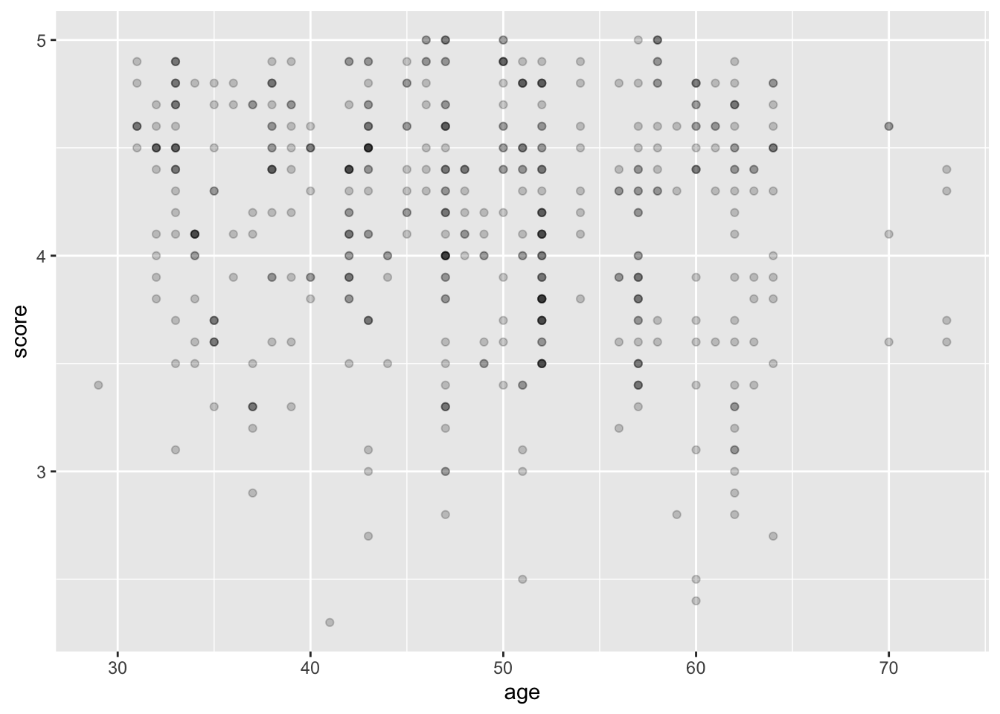
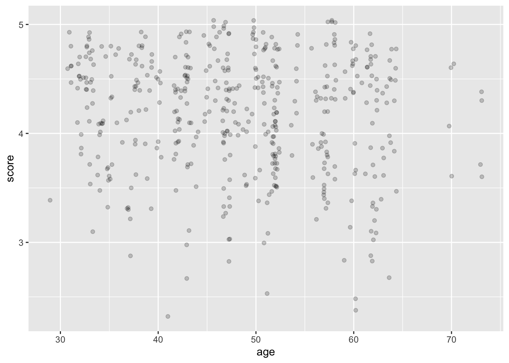
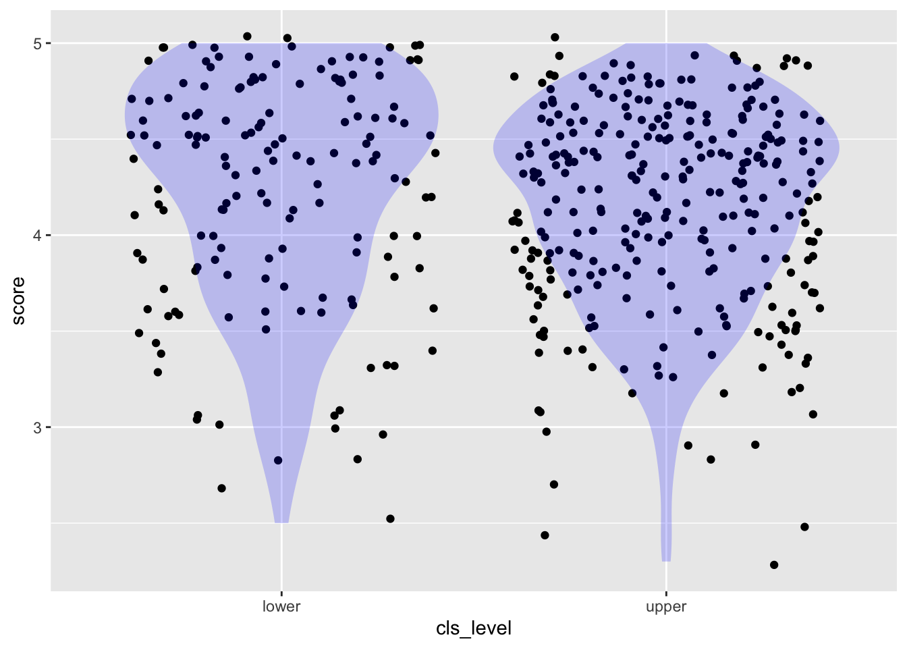
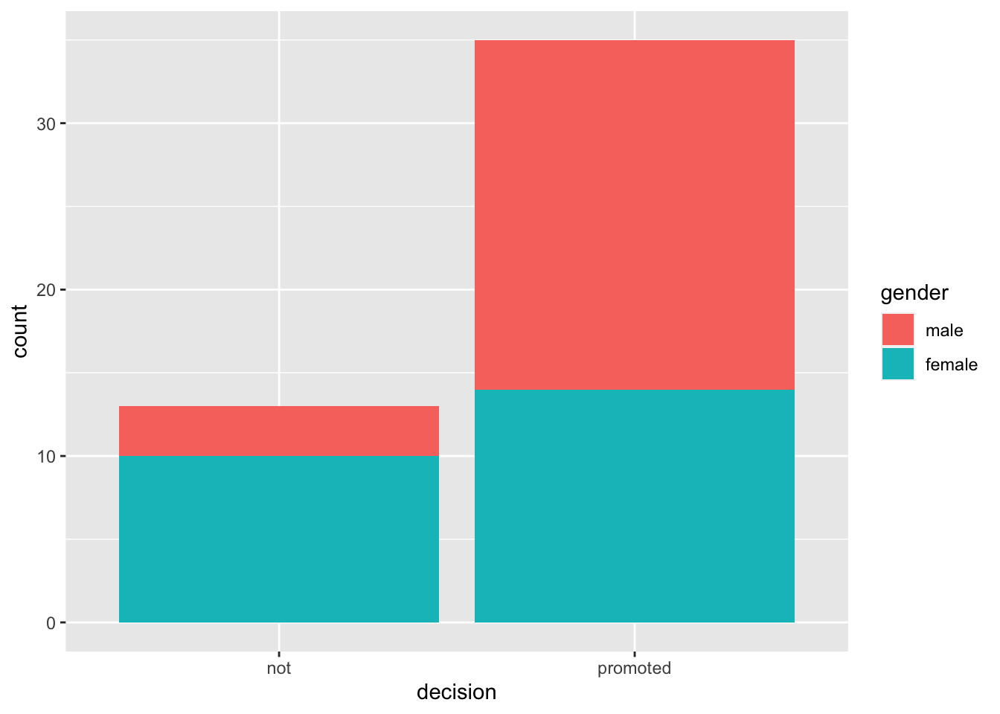
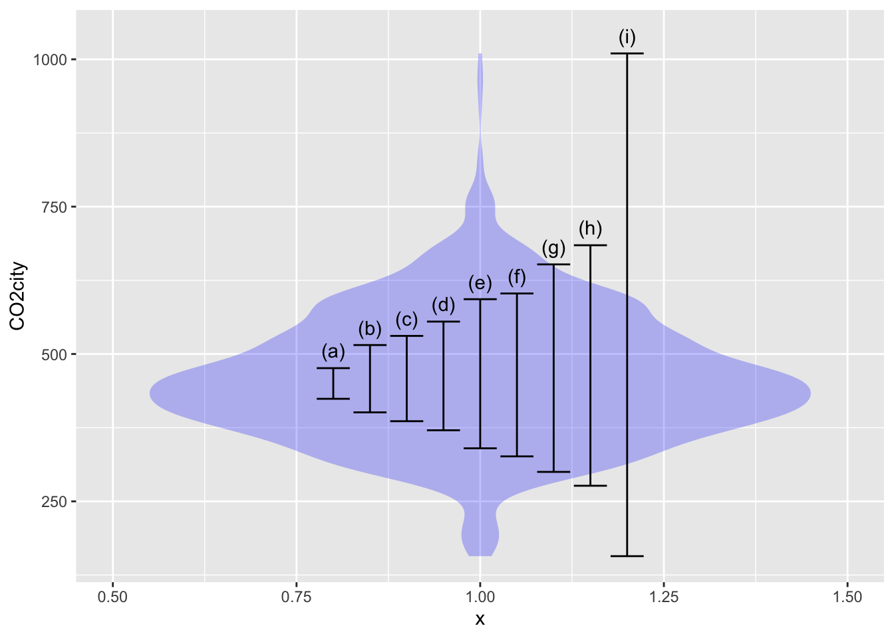
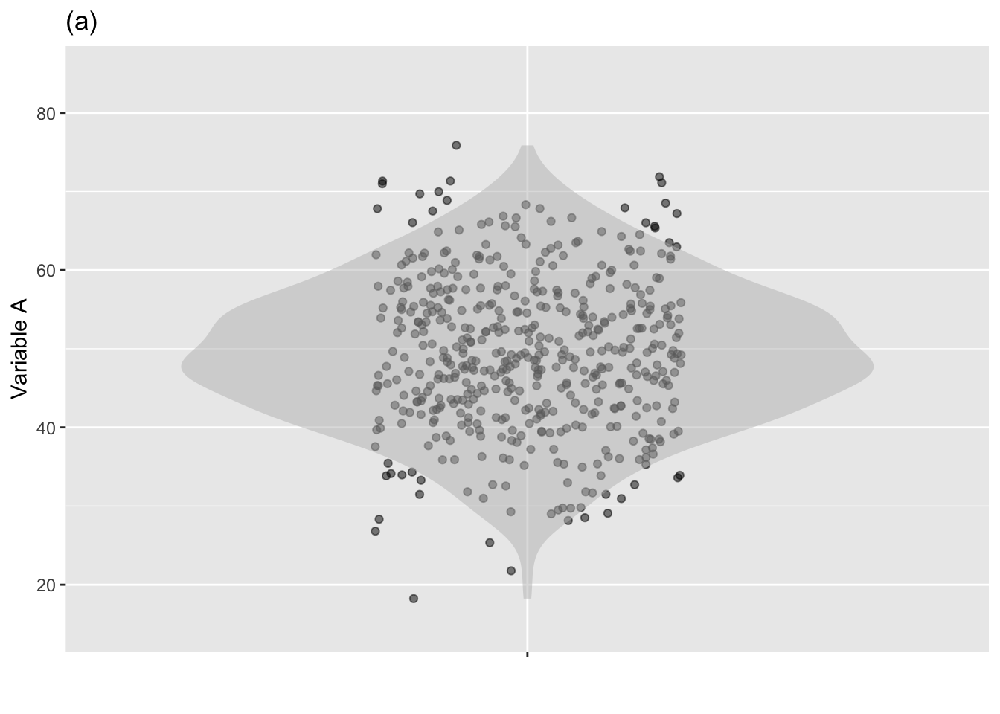
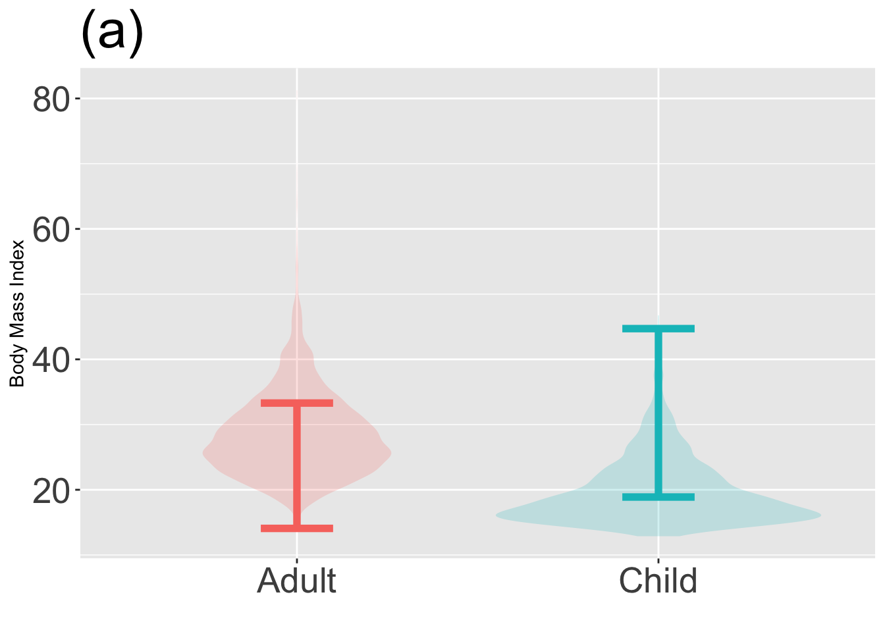
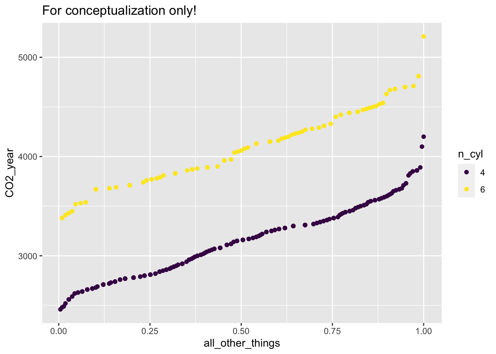
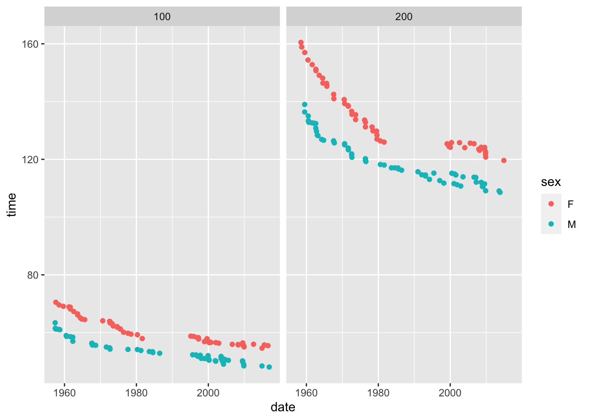
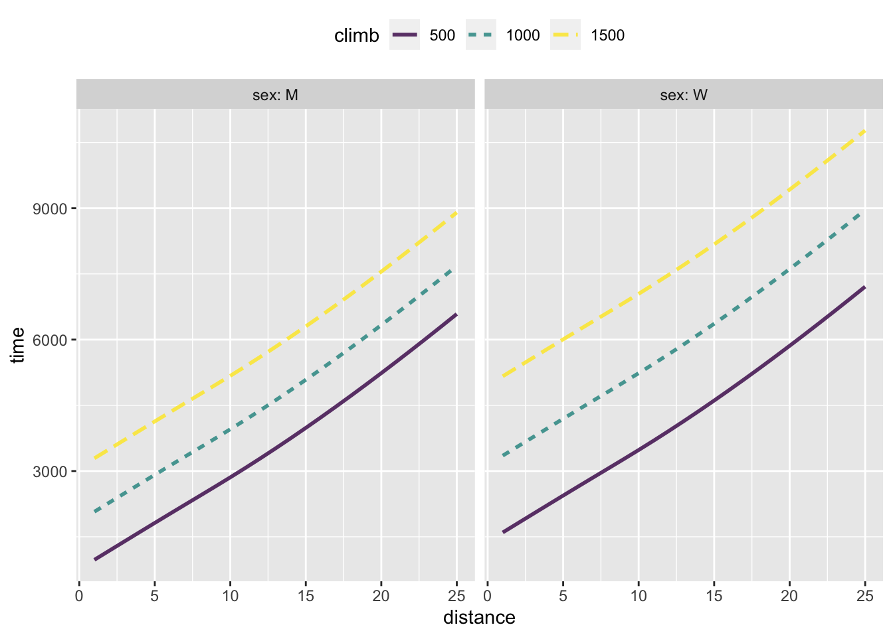

library(math300)
library(moderndive)
library(NHANES)List of learning checks
This list is assembled from the individual-lesson learning check files in the LC/ directory. Make any changes in that directory.
In draft: Data, temporarily
Several of the problems refer to datasets in the LC/data subdirectory and documented in LC/data/explain.qmd. These should eventually be moved to the math300 package. [Actually, not so many. Several of the examples from CSP refer to csv files, but those data are also available through the openintro or other packages.]
Non-technical resources
These are resources that can be used for an essay/reading exercise or class discussion.
pudding.cool
Examples:
- Chinese censorship of the Big Bang Theory
- Comparing pocket sizes on women’s and men’s clothing
- How artists get paid from music streaming
- Randomness and age. Perhaps suitable for Lesson 38 on “false discovery.”
- Coughing and the Academy awards (The link was through <pudding.cool>.)
- NBA draft
- Writing plainly
- many others!
NYT “What’s going on with this graph?”
Exercises from CPS
- Section 29.6 Exercises
- Linear and nonlinear correlations
- R2
Lesson 19
Setup
The math300 package will be needed for lessons 20 through 39.
19.1
Consider the moderndive::evals data that records students’ evaluations (score, on a 1-5 scale) of the professors in each of several courses (the course ID), as well as the age, “average beauty rating” (bty_avg) of the professor, enrollment in the course (cls_students) and the level o the course (cls_level). Each row in the data frame is an individual course section.
| ID | score | age | bty_avg | cls_students | cls_level |
|---|---|---|---|---|---|
| 329 | 2.7 | 64 | 2.333 | 22 | upper |
| 313 | 4.2 | 42 | 2.667 | 86 | upper |
| 430 | 4.5 | 33 | 5.833 | 120 | lower |
| 95 | 4.2 | 48 | 4.333 | 33 | upper |
| 209 | 4.8 | 60 | 3.667 | 34 | upper |
| 442 | 3.6 | 61 | 3.333 | 39 | lower |
| 351 | 4.6 | 50 | 3.333 | 26 | lower |
| 317 | 3.7 | 52 | 6.500 | 44 | upper |
| 444 | 4.1 | 52 | 4.500 | 111 | lower |
| 315 | 3.8 | 52 | 6.000 | 88 | upper |
The following commands model score versus age and plots the data as a point plot.
lm(score ~ age, data = moderndive::evals) %>% coefficients() (Intercept) age
4.461932354 -0.005938225 openintro::evals %>% gf_point(score ~ age, alpha=0.2 )
- Explain why some of the dots are darker than others?
Solution
All the ages have integer values—e.g., 43, 44, 45—so the dots line up in vertical lines.
Similarly, the scores have values only to one decimal place—e.g., 3.1, 3.2, 3.3—so the dots line up in horizontal lines. If there are two or more rows in evals that have the same age and score, the dots will be plotted over one another. Since transparency (alpha = 0.2) is being used, points where there is a lot of overplotting will appear darker.
- Remake the plot, but using
gf_jitter()instead ofgf_point(). Explain what’s different about the jittered plot. (Hint: Almost all of the dots are the same lightness.)
Solution
openintro::evals %>% gf_jitter(score ~ age, alpha=0.2 )
“Jittering” means to shift each dot by a small random amount. This reduces the number of instances where dots are overplotted.
- Now make a jitter plot of score versus class level (
cls_level).- What do the tick-mark labels on the horizontal axis describe? Are they numerical?
- To judge from the plot, are their more lower-level than upper-level courses? Explain briefly what graphical feature lets you answer this question at a glance.
Solution
openintro::evals %>% gf_jitter(score ~ cls_level)
- The tick-mark labels are the levels of the categorical variable
cls_level. The are words, not numbers. - There are many more dots in the right column than in the left. Since
lowerlevel class are shown in the left column, there are fewer lower-level courses than upper-level courses.
The two columns of points in the plot you made in (3) are not separated by very much empty space. You can fix this by giving
gf_jitter()an argumentwidth=0.2. Try different numerical values forwidthand report which one you find most effective at making the two columns clearly separated while avoiding overplotting.Are the scores, on average, different for the lower- vs upper-level classes? It’s hard to get more than a rough idea of the distribution of scores by looking at the “density” of points. The reason is that the number of points differs in the two columns. But there is an easy fix: add a layer to the graphic that shows the distribution (more or less like a histogram displays a distribution of values). You can do this by piping the jitter plot layer into a geom called a “violin,” like this:
openintro::evals %>%
gf_jitter(score ~ cls_level) %>%
gf_violin(fill="blue", alpha=0.2, color=NA)
Explain how to read the violins.
19.2
The openintro::promotions data comes the the 1970s and records the gender of 38 people along with the result of a decision to promote (or not) the person. =
Chapter 2 of ModernDive suggests graphically depicting decision versus gender by using a bar plot. There are two ways to make the bar plot, depending on which variable you assign to the horizontal axis and which to the fill color.
promotions %>% gf_bar(~ decision, fill=~ gender)
promotions %>% gf_bar(~ gender, fill=~decision)
Plots like those in ?@fig-promotion-bars might be attractive or not, depending on your taste. What they don’t accomplish is to make sure which is the response variable and which the explanatory variable.
The choice of response and explanatory variables depends, of course, on what you are trying to display. But everyday English gives a big hint. For instance, you might describe the question at hand as, “Does gender affect promotion decisions.” Here, the variable doing the affecting is gender, and the outcome is the decision.
Modeling decision as a function of gender is easy once you convert the response variable to a zero-one variable. Like this:
mod <- lm(zero_one(decision, one="promoted") ~ gender, data = promotions)
coefficients(mod) (Intercept) genderfemale
0.8750000 -0.2916667 mosaicModel::mod_eval(mod) gender model_output
1 male 0.8750000
2 female 0.5833333- Explain what is the relationship between the model coefficients and the model outputs.
Solution
The coefficients tell how to calculate the model output. These coefficients say that the model output will be 0.875, but subtract 0.292 if the person is female.
The model outputs give the probability of being promoted for each of the two genders.
- Make this plot and explain what the red lines show. (We don’t expect you to be able to write the command to generate such plots on your own, but we do expect you to be able to interpret them.)
promotions %>%
gf_jitter(zero_one(decision) ~ gender, height=0.2, width=0.2) %>%
gf_errorbar(model_output + model_output ~ gender, data=mod_eval(mod),
color="red", inherit=FALSE) %>%
label_zero_one()
Solution
The red lines show the proportion of the people in each gender group who were promoted. The y-axis scale on the left refers to the zero-one encoding of decision, while the y-axis labels on the right make it easier to read off the numerical value of the proportion.
19.3
The mosaicData::Whickham data from comes from a survey of a thousand or so nurses in the UK in the 1970s. The data record the age of each nurse along with whether the nurse was still alive in a follow-up survey 20 years later (outcome).
Make this graph from the Whickham data:
gf_jitter(zero_one(outcome) ~ age, data = Whickham, alpha=0.3, height=0.1) %>%
label_zero_one() 
Explain in everyday language what the graph shows about the lives of humans.
Make the graph again, but leave out the
%>% label_zero_one(). Then explain whatlabel_zero_one()does.
Solution
The graph shows that young nurses tended to be alive at the 20-year follow-up, older nurses not so much.
%>% label_zero_one()adds an axis on the left of the graph showing that in the zero-one tranform ofoutcome, “Alive” is assigned the value 1 and “Dead” the value 0.
Solution
19.4
About the summarization of models. Pipe the model fit into any of four functions:
%>% coefficients()%>% broom::tidy()%>% rsquared()%>% confint()
REDO confint() so that the columns are named lower, middle, upper
Solution
19.5 (Obj. 19.3)
Calculation of a 95% coverage interval (or any other percent level interval) is straightforward with the right software. To illustrate, consider the efficiency of cars and light trucks in terms of CO_2 emissions per mile driven. We’ll use the CO2city variable in the math300::MPG data frame. The basic calculation using the mosaic package is:
df_stats( ~ CO2city, data = math300::MPG, coverage(0.95)) response lower upper
1 CO2city 276.475 684.525The following figure shows a violin plot of CO2city which has been annotated with various coverage intervals. Use the calculation above to identify which of the intervals corresponds to which coverage level.
- 50% coverage interval -A- (c)
- 75% coverage interval -A- (e)
- 90% coverage interval -A- (g)
- 100% coverage interval -A- (i). This extends from the min to the max, so you could have figured this out just from the figure.

19.6 (Obj 19.3)
The two jitter + violin graphs below show the distribution of two different variables, X and Y. Which variable has more variability?

Solution
There is about the same level of variability in variable A and variable B. This surprises some people. Remember, the amount of variability has to do with the spread of values of the variable. In variable B, those values are have a 95% prediction interval of about 30 to 65, about the same as for variable A. There are two things about plot (b) that suggest to many people that there is more variability in variable B.
- The larger horizontal spread of the dots. Note that variable B is shown along the vertical axis. The horizontal spread imposed by jittering is completely arbitrary: the only values that count are on the y axis.
- The scalloped, irregular edges of the violin plot.
On the other hand, some people look at the clustering of the data points in graph (b) into several discrete values, creating empty spaces in between. To them, this clustering implies less variability. And, in a way, it does. But the statistical meaning of variability has to do with the overall spread of the points, not whether they are restricted to discrete values.
19.7 (Objs. 19.3 & 19.4)
The graphs below show a violin plot of body mass index (BMI) for adults and children. One of the graphs shows a correct 95% coverage interval on BMI, the other does not.
Identify the incorrect graph and say what feature of the graph led to your answer.

Solution
Graph (b) is correct. In graph (a), you can see that the interval fails to include a lot of the low BMI children and extends too high. For adults, the graph (a) interval extends too far low and doesn’t go high enough.
19.E
There are two equivalent formats describing an interval numerically that are widely used:
- Specify the lower and upper endpoints of the interval, e.g. 7 to 13.
- Specify the center and half-width of the interval, e.g. 10 ± 3, which is just the same as 7 to 13.
Complete the following table to show the equivalences between the two notations.
| Interval | bottom-to-top | plus-or-minus |
|---|---|---|
| (a) | 3 to 11 | |
| (b) | 108 ± 10 | |
| (c) | 30 ± 1 | |
| (d) | 97 to 100 | |
| (e) | -4 to 16 |
Solution
- 7 ± 4
- 98 to 118
- 29 to 31
- 98.5 ± 1.5
- 6 ± 10
It’s a matter of judgement which format to use. The bottom-to-top notation highlights the range of the interval while the plus-or-minus notation emphasizes the center of the interval. As a rule of thumb, I suggest this:
- If the first two digits are different between the top and bottom of the interval, use the bottom-to-top notation. So, write 387 to 393. If the first two digits are the same, use plus-or-minus. For instancer, the ratio of the mass of the Earth to that of the Moon is 81.3005678 ± 0.0000027. This is easier to take in at a glance than the equivalent 81.3005651 - 81.3005708
19.F
Lesson 20
Only for use in drafting questions
20.1. Understand that gaming is a way of improving our skills and identifying potential opportunities and problems.
20.2 Characterize the “size” of a variable or of random noise using variance (or, equivalently, “standard deviation”).
20.3 Distinguish between a sample, a summary of a sample, and a sample of summaries of samples.
20.A
You’re having a conversation about your statistics course with your engineer aunt at Thanksgiving. You tell her about how the course uses gaming (e.g. simulated data from DAGs) to develop an understanding of statistical methodology. She says (sensibly), “What? Simulated data? Isn’t statistics supposed to be about real data? It’s not a game.”
Write a paragraph-long response to your aunt explaining the point of gaming in learning statistics. Your paragraph should make a compelling case for gaming.
Write another paragraph that expresses any concerns you have about using games in a course that’s supposed to be about methods for extracting information about the world from real data.
20.B
Write statements using the computer commands covered in the first half of the course to calculate the size of the variability of these quantities:
The
agevariable from theCherry_race_longitudinaldata frame.The
Heightvariable from theNHANESdata frame.Compute the body-mass index from the formula \(\text{BMI} = \frac{w^2}/h\) where \(w\) is the person’s weight and \(h\) is the person’s height. Then calculate the size of the variability of the BMI you calculate from the
NHANESdata.
20.C
In draft
Show pictures of data together with violins. Ask students to estimate the “size” of the variation and to mark on the graph an annotation reflecting the “size.”
Is “size” a single number or a pair of numbers?
Contrast “size” with the coverage interval: why is one of them two numbers and the other just a single number.
20.1
?@sec-size-of-variable (in the reading for this variable) describes two very closely related summary quantities used to measures of the “size” of a variable: a) the variance and b) the “standard deviation” (which is the square root of the variance).
- Using software, what is the variance of the XXX variable in the YYY data frame? Make sure to include the units.
- What is the “standard deviation” of the XXX variable? Calculate this in two different ways: i. “by-hand” taking of the square root of the variance; ii. using the
sd()software directly.
[Repeat for a number of variables from different data frames.]
Solution
20.D
In draft
In arithmetic notation, parentheses are used to group operations. So, \(4*(3+2)\) is different from \(4*3 + 2\). With do(), a similar logic applies, but we use curly braces—not parentheses—for the grouping. Another difference is that with do() and summarization, some configurations may not work at all because using braces or not will produce different data frames with different names.
- Try the following two commands, which differ in how curly braces are used.
do(5) * {sample(Galton, size=50)} %>% summarize(m = mean(height))
do(5) * {sample(Galton, size=50) %>% summarize(m = mean(height))}One command produces an error message and the other doesn’t. Explain what’s wrong with the erroneous command.
- Try these two statements. Again, one will work and the other won’t. Diagnose the
{ do(5) * {sample(Galton, size=50) %>% summarize(m = mean(height))} } %>% summarize(sz=sd(m)) sz
1 0.3015075do(5) * {sample(Galton, size=50) %>% summarize(m = mean(height))} %>% summarize(sz = sd(m)) sz
1 NA
2 NA
3 NA
4 NA
5 NA20.E
Write single-line computer statements that will do the following (related) tasks:
Draw a sample of size 5 from the
mosaicData::TenMileRacedataDraw a sample (but now of size 100) and compute the “size” of variation of the
netvariable (which gives the net time to complete the race, start line to finish line).Carry out 300 trials of (2) using the
do()operator. (The result should be a data frame with entries that vary.) Note: Surround the statement for a single trial with curly braces:{and}. Also, arrange for the name of the column in the overall result to besz. This will appear in thesummarize()command.Add on to (3) the computations needed to calculate the mean and the standard deviation of the trials? Note: Surround the statement from (3) with a pair of curly braces so that the
summarize()command will look at all 300 trials as a single data frame.Is the mean thus calculated a single number comprising all trials or a number for each trial? Briefly justify your answer in terms of what the mean of the trials should be about.
Eexplain what the standard deviation of the trials captures and why it’s different from the standard deviation on one trial (as from (2)).
Repeat (4), but now with a sample size of 400 instead of 100. With the larger sample size, how do the mean and the standard deviation compare to what you got with a sample size of 100.
Repeat (4) but this time use 1200 trials instead of 300. With more trials, how do the mean and standard deviation compare to what you got with 300 trials?
Solution
# sample of size 100 from TenMileRace
sample(TenMileRace, size=5) state time net age sex orig.id
7127 VA 4820 4796 37 F 7127
1870 VA 5928 5518 36 M 1870
4531 MD 5563 5563 23 F 4531
1356 MD 5250 5090 33 M 1356
2003 MD 5875 5435 37 M 2003sample(TenMileRace, size=100) %>% summarize(sz = sd(net)) sz
1 951.0684do(300)* {sample(TenMileRace, size=100) %>% summarize(sz = sd(net))} sz
1 972.5812
2 824.8592
3 821.5586
4 938.5612
5 939.4491
6 928.3224
7 965.7778
8 992.9269
9 992.3919
10 1080.1513
11 943.7595
12 1037.2753
13 1012.8912
14 996.0352
15 1079.2897
16 899.4723
17 906.8983
18 862.4734
19 924.8717
20 1039.7077
21 964.8859
22 912.1430
23 955.7692
24 1079.1801
25 945.2650
26 1001.7177
27 955.8785
28 934.3646
29 990.0511
30 962.5995
31 967.1691
32 1097.1731
33 907.0343
34 993.1500
35 937.3869
36 939.2032
37 907.1917
38 936.3380
39 936.3048
40 1053.9427
41 903.9515
42 1122.2634
43 1029.8397
44 926.2964
45 1103.9172
46 975.8339
47 1083.2056
48 938.3758
49 899.2549
50 992.7765
51 990.9264
52 813.2843
53 1102.1025
54 755.8189
55 1008.5489
56 913.3470
57 1055.8151
58 1006.8449
59 826.4333
60 1007.9796
61 988.5770
62 1016.8350
63 967.5634
64 932.8218
65 949.6178
66 935.0267
67 899.5244
68 815.5198
69 933.8537
70 1017.0440
71 779.8278
72 867.1942
73 1004.3558
74 1005.0899
75 1118.5752
76 866.4319
77 1040.7873
78 1025.7857
79 967.3428
80 971.8905
81 1029.6817
82 1001.2666
83 858.4597
84 910.2976
85 950.5084
86 963.3022
87 967.6966
88 956.6273
89 843.8254
90 1029.6041
91 951.6543
92 1042.9482
93 874.5089
94 909.2968
95 962.3898
96 1074.9379
97 881.3408
98 936.6853
99 895.3177
100 975.7541
101 972.2259
102 1010.0560
103 789.2095
104 1132.4296
105 969.5747
106 957.4232
107 1014.8825
108 857.2816
109 1103.3705
110 851.8963
111 1002.6471
112 819.0540
113 982.2953
114 915.8515
115 996.1651
116 855.4621
117 878.6094
118 912.6942
119 1030.0310
120 825.6659
121 1005.7683
122 1031.5542
123 1126.4620
124 1100.2412
125 915.7616
126 921.1658
127 999.6651
128 978.5067
129 844.5894
130 955.6868
131 947.4918
132 963.0174
133 952.6687
134 1074.9521
135 950.0944
136 844.6555
137 1066.3125
138 980.3699
139 1119.9149
140 1037.1454
141 949.1217
142 1094.5156
143 975.7513
144 813.0390
145 814.3828
146 949.0838
147 861.1970
148 955.8846
149 975.3213
150 882.5769
151 933.1666
152 806.5156
153 827.7887
154 930.9380
155 944.4835
156 1026.5458
157 1112.7747
158 1038.9871
159 835.5357
160 921.8688
161 927.8762
162 928.4328
163 771.5887
164 1093.4424
165 1125.0387
166 864.7831
167 857.8454
168 903.1473
169 957.3963
170 860.0105
171 886.2518
172 914.7956
173 993.6665
174 857.3370
175 830.1747
176 1003.2101
177 1096.0726
178 971.3859
179 970.9167
180 907.7088
181 982.6391
182 930.2694
183 950.4383
184 956.4709
185 957.9360
186 938.9992
187 902.7469
188 997.7660
189 952.0713
190 850.9500
191 900.8205
192 996.3816
193 978.8046
194 955.1345
195 1019.0840
196 907.4728
197 1107.4039
198 956.8556
199 1005.5707
200 954.7452
201 1051.8599
202 927.9475
203 835.2828
204 983.7366
205 935.3973
206 943.8083
207 921.2009
208 859.0696
209 950.8036
210 1013.8412
211 1012.3216
212 934.2267
213 856.8701
214 939.1951
215 1050.0359
216 946.4714
217 1043.4746
218 934.7167
219 958.0577
220 938.1260
221 959.8289
222 1023.2610
223 944.8401
224 1126.1726
225 1036.0903
226 888.6611
227 874.7365
228 798.1713
229 1143.1490
230 969.9378
231 957.8012
232 1073.4201
233 917.0050
234 891.6083
235 1028.5489
236 971.0936
237 1045.8578
238 1068.3065
239 973.8031
240 1103.5208
241 978.3619
242 1074.7413
243 1011.4880
244 963.8257
245 891.8563
246 988.9697
247 1073.4325
248 1183.1512
249 945.7524
250 1086.4373
251 793.2965
252 972.1942
253 1032.7620
254 926.8040
255 944.1331
256 940.1985
257 1089.3612
258 921.3067
259 1104.1693
260 863.2042
261 1023.1090
262 889.9317
263 1134.5078
264 971.4643
265 1038.0073
266 969.7236
267 982.1654
268 1022.1162
269 910.0159
270 1019.7098
271 910.3500
272 953.3862
273 961.2607
274 854.7824
275 908.5864
276 877.5796
277 904.0877
278 980.0922
279 942.7869
280 1079.1974
281 947.2121
282 896.4217
283 953.9140
284 786.3968
285 1111.9730
286 1189.9003
287 909.4212
288 1013.4597
289 835.7166
290 985.0277
291 1030.3573
292 1005.7200
293 932.0799
294 910.6702
295 965.9356
296 812.0218
297 910.2485
298 1055.7511
299 988.8919
300 891.1537{do(300)* {sample(TenMileRace, size=100) %>% summarize(sz = sd(net))}} %>% summarize(m = mean(sz), s=sd(sz)) m s
1 970.0165 85.8338{do(300)* {sample(TenMileRace, size=400) %>% summarize(sz = sd(net))}} %>% summarize(m = mean(sz), s=sd(sz)) m s
1 965.6244 36.77361Using a sample size that’s four times larger doesn’t affect the mean, but it reduces the standard deviation by a factor of two.
Increasing the number of trials does have any noticeable effect on either the mean or standard deviation.
20.E
Throughout this course, you’re going to be using lm() to build models. Often, to demonstrate “sampling variation.” you will use sample() on a dataset or a DAG to generate a random sample and then send the result as the data= argument to lm(),
Here are three computer commands that use the data= argument in different ways. One of them doesn’t work at all. Which one?
sample(mtcars, size=10) %>% lm(mpg ~ wt + hp, data=.)
sample(mtcars, size=10) %>% lm(mpg ~ wt + hp)
lm(mpg ~ wt + hp, data=sample(mtcars, size=10))
In draft
This problem would be come irrelevant if the fitmodel() command described in the [Lesson 19 NTI]{../NTI/NTI-Lesson19.html} is being used.
Lesson 21
21.1
The following command will generate a data frame with 1000 rows from dag00 and calculate the variance of the x and y variables:
sample(dag00, size=1000) %>%
summarize(vx = var(x), vy = var(y))# A tibble: 1 × 2
vx vy
<dbl> <dbl>
1 3.78 1.04Compare this result to the DAG tilde expressions
dag00[[1]]
x ~ eps(2) + 5
[[2]]
y ~ eps(1) - 7
attr(,"class")
[1] "list" "dagsystem"In the tilde expressions, eps(2) means to generate noise of magnitude 2.0.
- Is the argument to
eps()specified in terms of the variance or the standard deviation? - The tilde expression for
xspecifies that the constant5is to be added toeps(2). Similarly, the constant-7is added toy. How do these constants relate to the calculated magnitudes ofxandy?
Solution
- The standard deviation. For instance,
xhas noise of magnitude 2. The variance ofxis 4, the square of 2. - The standard deviation (and therefore the variance) ignore such added constants.
21.2
?@sec-signal-and-noise introduces the idea that variables consist of components. A simple breakdown is into two components: i. the part of the variable that is determined by other variables in the system (“signal”) and ii. the random part of the variable (“noise”). The section uses dag01 as an illustration of how a variable can be partly determined and partly random noise.
Write and execute a command that will generate 500 rows of simulated data from
dag01and will calculate the standard deviation ofxand ofy.What’s the magnitude of
xin the simulated data? What’s the magnitude ofy?Does this change if you use data with 1000 or 20000 rows?
Solution
sample(dag01, size=500) %>% summarize(sx = sd(x), sy=sd(y))- The standard deviation of
xis about 1, the standard deviation ofyis about 1.8. - No, the values are roughly the same regardless of the size of the sample.
21.3
[DRAW several DAG-like graphs, one of which should be undirected in all edges, one should be undirected on one or two edges (but not all), and one should be cyclic and another acyclic.]
Referring to the graphs in the figure, say which ones are DAGs. If a graph is not a DAG, say whether that’s because it’s not directed or because it’s not cyclic.
Solution
21.A
A DAG (directed acyclic graph) is a mathematical object used to state hypothetical causal relationships between variables. Explain briefly (e.g. a few sentences overall) what each of the words “directed,” “acyclic,” and “graph” mean in the context of a DAG.
Solution
A graph is a relationship between discrete elements (called “nodes” abstraction) each of which for us represents a hypothetical quantity, that is, a variable. In addition to the nodes, the graph contains edges which represent the connections between variables.
A directed graph is one whose arrows have a direction. For instance \(A \rightarrow B \leftarrow C\) means that \(A\) and \(C\) together cause \(B\), but \(B\) has no influence on \(A\) and \(C\).
An acyclic graph is one where it is impossible to start on any given node and, by following the directed edges, return back to that node.
21.B
Draw these DAGs:
“April showers bring May flowers.”
“Price of a rug is determined by the size and the quality of materials.”
“The weight of an automobile is reflected in the MPG fuel economy, as is the speed of the car, and inflation level of the tires.”
“Plants tend to grow in the direction of the sunlight.”
“An ice-cream shop owner needs to plan staffing based on the season, day of the week, and holidays.”
21.C
21.4
Generate simulated data from dag01 with 1000 rows. Fit the regression model y ~ x to the data and examine the coefficients.
How do the coefficients relate to the tilde expressions that define
dag01?Instead of using the regression model
y ~ x, whereyis the response variable, try the regression modelx ~ y. Do the coefficients fromx ~ ycorrespond in any simple way to the tilde expressions that definedag01?
Solution
sample(dag01, size=1000) %>%
lm(y ~ x, data = .)
Call:
lm(formula = y ~ x, data = .)
Coefficients:
(Intercept) x
4.018 1.507 The intercept corresponds to the additive constant (4) in the y tilde expression. The x coefficient corresponds to the multiplier on x in the tilde expression.
The formula for x isn’t reflected by the coefficients.
Using x as the response variable:
sample(dag01, size=10000) %>%
lm(x ~ y, data = .)
Call:
lm(formula = x ~ y, data = .)
Coefficients:
(Intercept) y
-1.850 0.462 These coefficients do not appear in the dag01 tilde expressions.
21.5 (Objective 21.2)
You are trying to understand why automobile fuel economy varies from model to model. Using the mtcars data frame (documentation at help("mtcars")) …
- What’s an appropriate choice of a response variable?
- Pick two explanatory variables of interest to you. Build an appropriate model from the data, extracting the
coefficients()of the model. Explain what the coefficients mean in everyday terms that your cylinder-head uncle would approve of. - Which of the other variables are covariates? iv.Pick a covariate that your intuition suggests would be important. Include that covariate in the model from (ii) and say whether the covariate shows up as important in the model coefficients.
Solution
- All of the other variables are covariates. A covariate is merely a potential explanatory variable that you are not directly interested in. Of course, not all covariates play an important role in the system.
21.6 (Obj 21.3)
Generate a sample of size \(n=100\) from dag03. Use the data to construct a model of y versus x. But instead of using coefficients() to look at the model coefficients, use confint(). While coefficients() reports a single value for each coefficient, confint() reports a plausible interval for coefficients that is consistent with the data.
- For \(n=100\), how wide is the interval reported by
confint()on thexcoefficient. - Repeat the process of sampling and modeling, but this time use \(n=400\). How wide is the interval reported by
confint()on thexcoefficient. - Again repeat the process of sampling and modeling, this time using \(n=1600\). iv. Does the interval reported depend systematically on the size \(n\) of the sample? Describe what pattern you see.
21.7
A short report from the British Broadcasting Company (BBC) was headlined “Millennials’ pay ‘scarred’ by the 2008 banking crisis.”
Pay for workers in their 30s is still 7% below the level at which it peaked before the 2008 banking crisis, research has suggested. The Resolution Foundation think tank said people who were in their 20s at the height of the recession a decade ago were worst hit by the pay squeeze. It suggested the crisis had a lasting “scarring” effect on their earnings.
The foundation said people in their 30s who wanted to earn more should move to a different employer. The research found those who stayed in the same job in 2018 had real wage growth of 0.5%, whereas those who found a different employer saw an average increase of 4.5%.
The phrase “should move” in the second paragraph of the report suggests causation. A corresponding DAG would look like this:
- move_to_new_employer \(\rightarrow\) higher_wage
For the sake of discussion, let’s add two more variables to the DAG:
- effectiveness—standing for how productive the employee is.
- qualifications—standing for whether the employee is a good candidate attractive to potential new employers.
Construct a DAG with all four variables that represent plausible causal connections between them. The DAG should not contain a direct causal connection between move_to_new_employer and higher_wage.
If the world worked this way, would it necessarily be good advice to switch to a new employer with the aim of earning a higher wage?
Lesson 22
22.1 (Obj 20.3)
Consider these three data frames:
One <- sample(dag01, size=25)
Two <- do(10) * {
lm(y ~ x, data = sample(dag01, size=25)) %>%
coefficients()
}
Three <- Two %>%
summarize(mx = mean(x), sx = sd(x))- Both
OneandTwohave columns calledx, but they stand for different things. Explain what the unit of observation is and what the values inxrepresent.. Threedoes not have a column namedx, but it is a summary of thexcolumn fromTwo. What kind of summary.
Solution
- In
One, thexcolumn contains the simulated of thexvariable fromdag01. The unit of observation is a single case, for instance a person for whom observations were made ofxandy. The simulation involves generating 25 rows of data: one row for each of 25 people. - In
Two, thexcolumn is the regression coefficient onxfrom the simulation. Each row ofTwocorresponds to one trial in which regression is being performed on a sample of size 25 of simulated data fromdag01. Threeis a summary of the 10 trials inTwo. The columns, namedmxandsx, tell about the distribution ofxacross all the trials.
22.2 (Obj 21.3)
Part 1
You are going to write a procedure that automates the following process:
- sampling from a DAG, specifically
dag01, usingsample()with a size of 25. - fitting a model
y ~ xusinglm() - reporting the coefficient on
xusingcoefficients().
Call the procedure proc1().
To do this fill in the following template in your Rmd document:
proc1 <- function() {
# your statements go here
}Once you have proc1() ready, you can carry out the procedure by giving a simple command:
proc1()Part 2
Now that you have proc1() ready and have tried it out, you are going to run the procedure 100 times repeatedly and look at the distribution in the x coefficient.
Of course, you could laboriously give the command proc1() 5 times, and write down the x coefficient each time. Far better, though, to automate the process of repeating and collecting the x coefficient.
You can do this easily by using do(5) in conjunction with proc1().
What’s the form in which the coefficients are collected when using
do()?Is the
xcoefficient the same from trial to trial? Explain why or why not.Change your statement to run 100 trials rather than just 5, and to store the collected results in a data frame called
Trials. Use appropriate graphics to display the distribution of thexcoefficient. Summarize the distribution in a sentence or two.Create a consise summary of the
xcolumn ofTrialsusingsummarize()withsd(x)to calculate the standard deviation. Compare the size of the standard deviation to the graphical display in (3).
Solution
Part 1
proc1 <- function() {
Dat <- sample(dag01, size=25)
Mod <- lm(y ~ x, data = Dat)
coefficients(Mod)
}or, more concisely ::: {.cell}
proc1 <- function() {
sample(dag01, size=25) %>%
lm(y ~ x, data = .) %>%
coefficients()
}Part 2
do(5) * proc1() Intercept x
1 4.048530 1.770314
2 3.693512 1.475927
3 4.105278 1.297085
4 4.250074 1.639121
5 3.934672 1.201477The results of the five trials are collected into a data frame.
The
xcoefficients varies from trial to trial.
Collect 100 trials
Trials <- do(100) * proc1()- An appropriate graphical display of the trials:
ggplot(Trials, aes(x)) + geom_density(fill="blue", alpha=0.3)
The x coefficient varies from near 0.5 to near 2.5 in a bell-shaped form.
- Summarize the trials by the standard deviation.
Trials %>% summarize(s = sd(x)) s
1 0.2084765The standard deviation is about 1/4 the width of the distribution.
Lesson 23
23.1
Vocabulary: Sampling distribution, standard error, sampling variability, sample size
Solution
23.2
In LC 22.2, using do(100), you displayed the sampling distribution on the x coefficient of the model y ~ x applied to data simulated from dag01. Among other things, you calculated the standard deviation of the sampling distribution. Copy over the proc1() you wrote for LC 22.2 into your Rmd document for this lesson.
Calculate the standard deviation of the sampling distribution in each of these situations.
| Number of trials | Sample size |
|---|---|
do(100) |
size=25 |
do(100) |
size=100 |
do(100) |
size=400 |
do(500) |
size=25 |
do(500) |
size=100 |
do(500) |
size=400 |
In each case, the standard deviation is somewhat random, since new simulated data is collected from dag01 each time. Nonetheless, there is a systematic pattern to how the standard deviation varies with the number of trials and with the sample size.
Describe how the standard deviation of the sampling distribution of the
xcoefficient varies with sample size. The general trend should be easy to see.Does the standard deviation of the sampling distribution depend on the number of trials?
Going back to your results from (1), try to find a simple quantitative relationship that describes how the standard deviation depends on sample size. State that relationship in words.
23.3
We’re going to build models of prices of books based on the moderndive::amazon_books data frame. For each model, you will calculate the confidence interval of one or more coefficients in two ways:
- Directly, using
confint(). - Indirectly, using
broom::tidy()
Model 1.
Model
list_priceversusamazon_price. Calculate the confidence intervals on the intercept and on theamazon_pricecoefficient.Interpret the
amazon_pricecoefficient in everyday words.
Solution to part 1.
lm(list_price ~ amazon_price, data = amazon_books) %>% confint() 2.5 % 97.5 %
(Intercept) 3.716532 5.122737
amazon_price 1.049308 1.127471lm(list_price ~ amazon_price, data = amazon_books) %>% broom::tidy()# A tibble: 2 × 5
term estimate std.error statistic p.value
<chr> <dbl> <dbl> <dbl> <dbl>
1 (Intercept) 4.42 0.357 12.4 5.22e- 29
2 amazon_price 1.09 0.0199 54.8 2.82e-165You can read the confidence interval directly from the
confint()report. For the regression report, calculate the confidence interval as the estimate \(\pm 2\) times the “standard error.”Just to look at the
amazon_price()coefficient, the list price is about 8% higher than the Amazon price. Here, “about” means 5% to 13%. But don’t forget the intercept. The list price is, on average, about $4.50 higher than the 1.08 multiplier on the Amazon price.
Model 2.
- Model
list_priceversusamazon_price, includinghard_paperas a covariate.
Solution
lm(list_price ~ amazon_price + hard_paper, data = amazon_books) %>% confint() 2.5 % 97.5 %
(Intercept) 3.028400 4.466996
amazon_price 1.042536 1.117826
hard_paperH 1.786977 3.882884lm(list_price ~ amazon_price + hard_paper, data = amazon_books) %>% broom::tidy()# A tibble: 3 × 5
term estimate std.error statistic p.value
<chr> <dbl> <dbl> <dbl> <dbl>
1 (Intercept) 3.75 0.366 10.3 1.62e- 21
2 amazon_price 1.08 0.0191 56.5 9.65e-169
3 hard_paperH 2.83 0.533 5.32 1.93e- 7A hardcover costs about $2 to $4 more than a paperback.
Note in draft
Return to this example in the prediction lesson, to show how the confidence interval and the prediction interval are different.
Maybe also use it in one of the side-exercises on interaction terms. (The plan is not to strongly emphasize interaction terms but to refer to them in the occasional exercise.)
23.4 (Objective 23.1)
We’re going to work with a very short dataset so that you can see directly what resampling a data frame does. (Ordinarily, you use resampling on an entire dataset, but here we are trying to make a point about the mechanism of resampling.)
- Create a data frame
Fivethat consists of the first five rows ofmoderndive::mythbusters_yawn. (Hint: Usehead().) Put the code for doing this into your Rmd homework paper. Note thatFivecontains the data from subjects 1 through 5.
Solution
Five <- mythbusters_yawn %>% head(5)Use
resample()to generate a new data frame fromFive. At this point, you are just going to look at the result, processing it “by eye.” How many distinct human subjects are reported in the resampled data? (Your answer will likely differ from your classmates’, since resampling is done at random.)Repeat (2) ten times. Each time, count the number of distinct human subjects.
- Report those ten numbers on your write-up.
- There will usually be one or more subjects repeated in the output. Look at these repeats carefully to check whether the variables have the same value for all the repeats or whether sometimes a repeated subject has different values for
grouporyawn.
Solution
Most of the time there will be 2, 3, or 4 distinct subject. The balance of the five rows will be repeats of other subjects. When a subject is repeated, the entire row is identical for all instances of that subject.
Going further (optional). It’s pretty easy to automate the process of generating the resample and counting the number of distinct human subjects. Like this:
{resample(Five) %>% unique() %>% nrow()}[1] 3Using do(1000), carry out 1000 trials of this process, saving the overall results in a data frame named Trials. What is the mean number of unique human subjects across the 1000 trials? What fraction is this of the five subjects.
Do the same again, but instead of using Five, use the whole mythbusters_yawn data frame (which has 50 rows). What fraction of the 50 human subjects, on average, shows up in the resamples?
Solution
Trials <- do(1000) * {resample(mythbusters_yawn) %>% unique() %>% nrow()}
Trials %>% summarize(mn = mean(result)/nrow(mythbusters_yawn)) mn
1 0.6352623.5 (Objective 23.1)
Return to the amazon_books data frame and the model list_price ~ amazon_price. In Exercise 23.3 you used the regression report to calculate the confidence intervals on the intercept and on the amazon_price coefficient. Now you are going to repeat the calculation in a different way, using randomization, a process called “bootstrapping”.
The basic process is to train a model using resampled data, like this:
lm(list_price ~ amazon_price, data = resample(amazon_books)) %>% coefficients() (Intercept) amazon_price
3.748436 1.129395 Then, using do(500), carry out 500 trials, saving the result in a data frame named Trials.
Process Trials to calculate both the mean and the standard deviation of the intercept and amazon_price columns. How do those results compare to the “standard error” results from the same model (without resampling) as you found in LC 23.3?
Solution
SOMETHING IS WRONG HERE. The means are about the same as from the regression report (as they should be) but the standard deviations are 3-4 times larger. WHAT GIVES?
THE PROBLEM IS a handful of books where the Amazon price is very different from the list price, because the book itself is very expensive (e.g. $100). Remedy
- Switch to another data example, maybe doing both the regression report and the bootstrapping in one exercise.
- This is an object lesson in outliers. Since the dollar discount is presumably proportional to the price, we should have used log transforms.
Trials <- do(500) * {lm(list_price ~ amazon_price, data = resample(amazon_books)) %>% coefficients()}
Trials %>% summarize(m1 = mean(Intercept),
m2 = mean(amazon_price),
sintercept = sd(Intercept),
samazon_price = sd(amazon_price)) m1 m2 sintercept samazon_price
1 4.154913 1.109362 0.8972471 0.078366Lesson 24
Just to help when writing problems
24.1 Estimate an effect size from a regression model of one and two variables.
24.2 Construct a confidence interval on the effect size.
24.3. Gaming: Evaluate whether confidence interval indicates that estimated effect size is consistent with simulation.
24.1 (Objective 24.1)
What are the two settings for decision making that we cover in this course?
Give an example of each.
Solution
- Prediction and (2) Relationship
What will be the sales price of this house? “This house” is a shorthand way of saying “a house with these attributes.” The sales price will be the output of a prediction function that takes the various attributes as input and produces a sales price as output.
If I look for a house with an additional bathroom, how much will that change the sales price? This asks for the relationship between number of bathrooms and sales price.
24.2 (Objective 24.1)
For each of these research questions, say whether it is a prediction setting or a relationship setting.
- What’s the risk of falling ill?
- How will the risk of falling ill change if we eat more broccholi?
- Is there any reason to believe, based on the evidence at hand, that we should look more deeply into the possible benefits of broccholi?
Solution
- Prediction
- Relationship
- Relationship
SOME IDEAS FOR EXERCISE MODES
Use
mod_plot()and look at the slope of lines and offsets. Compare to the model coefficients.Generate data from a DAG and look at the confidence interval on the effect size. Then make new samples and see if the effect size in those samples is consistent with the confidence interval.
In text, maybe look at the confidence intervals across new samples and show that they tend to overlap. Only a few of them don’t touch a common line. This is basically just a review of confidence intervals, but why not?
Interaction. Show that when there is an interaction term, the effect size (as calculated by
mod_effect()) is not constant, as it is for models with purely linear terms.
LC 24.1
The Computational Probability and Statistics text describes an early study on human-to-human heart transplantation:
“The Stanford University Heart Transplant Study was conducted to determine whether an experimental heart transplant program increased lifespan. Each patient entering the program was designated an official heart transplant candidate, meaning that he was gravely ill and would most likely benefit from a new heart. Some patients got a transplant and some did not. The variable indicates which group the patients were in; patients in the treatment group got a transplant and those in the control group did not. [[Not in data set: Another variable called [MISSING] was used to indicate whether or not the patient was alive at the end of the study.]]”
The data frame is called Transplants. [NEED TO MOVE TO PACKAGE]
You’re going to build a model of outcome vs group based on the data in Transplants. The outcome variable has levels "Dead" and "Alive", that is, it is a two-level categorical variable. Consequently, the model output will be the probability that the transplant candidate was alive at the end of the study.
- Build a model
outcome == "Alive" ~ groupfrom theTransplantsdata. Pay close attention to the left-hand side of the tilde expression: it is a calculation that produces a 1 ifoutcomeis"Alive"and zero otherwise. Notice the double equal signs and the quotes around"Alive".
Solution
mod <- lm(outcome == "Alive" ~ group, data = Transplants)The sole explanatory variable here,
groupalso is categorical. It has levels"Control"and"Treatment".- Using
eval_mod(), find the probability of being alive at the end of the study for the Control group and for the treatment group. - The two probabilities in (ii) do not add up to zero. Explain why.
- Using
Solution
mod_eval(mod, group="Treatment") group model_output
1 Treatment 0.3478261mod_eval(mod, group="Control") group model_output
1 Control 0.1176471Find the effect size of the treatment. All you need is your results from (2)?
Use
mod_effect(modelname, ~ group)to calculate the effect size.- Is the result consistent with what you found in (3).
- Explain in everyday language what this effect size means.
Solution
mod_effect(mod, ~ group) change group to_group
1 -0.230179 Treatment Control24.2
Effect sizes generally come with units and you have to take into account the units in order to know if the effect is important or not.
In draft
Move the Loans data into the math300 package. But for now …
Loans <- readr::read_csv("data/loans.csv")A case in point is provided by the Loans data frame, which records dozens of variables on each of 10,000 loans made through the Lending Club. The interest rate at which the loans are made varies substantially from loan to loan. Presumably, higher interest rates reflect a higher perception of risk of default (which would lead to the lender losing his or her money).
Here’s a model of the interest rate. (This is for the borrowers who have a low debt-to-income percent; we won’t worry about the few very high debt-to-income cases.) We’re only interested in this problem with the effect size, which is the same as the coefficients on the model.
mod <- lm(interest_rate ~ homeownership + debt_to_income +
account_never_delinq_percent + verified_income,
data = Loans %>% filter(debt_to_income<50))
mod %>% confint() 2.5 % 97.5 %
(Intercept) 15.31467948 17.26502804
homeownershipOWN 0.16056412 0.73009641
homeownershipRENT 1.01571903 1.41695574
debt_to_income 0.09565833 0.11523598
account_never_delinq_percent -0.09149666 -0.07122369
verified_incomeSource Verified 1.37798985 1.79909554
verified_incomeVerified 2.88724295 3.39001806There are two quantitative explanatory variables—debt_to_income and account_never_delinq_percent—both of which are measured in percent.
There are two categorical explanatory variables: homeownership and verified_income. The levels for homeownership are “MORTGAGE” (meaning money is still owed on the house), “OWN” (without a mortgage), and “RENT” (meaning the borrower rents rather than owning a home). The levels for verified_income are “Not Verified”, “Verified”, “Source Verified”.
For the categorical explanatory variables (and the intercept) the effect-size units are “percent interest.” For the quantitative explanatory variables, the effect-size units are “percent interest per percent,” so that when multiplied by the debt_to_income percent or the account_never_delinq_percent the result will be in “percent interest.”
- According to the model, who pays the higher interest rate (on average): people who OWN their home, people who RENT, or people who have a mortgage on their home? How much higher than the lowest-interest rate category.
Solution
People who rent pay the highest interest rate, a little more than 1 percentage point higher than people who have mortgages. It’s interesting that people who own their homes outright pay (on average) pay about 0.45 percentage points more than people who own outright. This might be because having a mortgage means you also have a credit history.
- According to the model, who pays the higher interest rate (on average): people whose income is “not verified,” people whose income is “verified,” or people who have the source of income verified (level: “source verified”)?
Solution
People whose income is verified pay about 3 percentage points higher interest than people whose income is “not verified.” This seems surprising, but it may be that people who have higher perceived default risk are also the people who are asked to verify their income. Things get complicated when explanatory variables are linked to each other.
- The coefficients on
debt_to_incomeandaccount_never_delinq_percentare the smallest numerically. Does this mean that the effects ofdebt_to_incomeandaccount_never_delinq_percentare smaller than the other two explanatory variables in the model? Explain why or why not. (Hint: Look at the distribution ofdebt_to_incomeandaccount_never_delinq_percentto get an idea for the range of values these variables take on.)
Solution
debt_to_income varies over about 25 percentage points. The variation in account_never_delinq_percent is about the same, varying from about 80 to 100 percentage points. The effect of the variables (in percent interest) is determined by multiplying the coefficients by the amount of variation in the variables. So, from one extreme to the other, the effect of debt_to_income is about 2 perentage points of interest, and roughly the same for debt_to_income.
24.4
The logic of effect size is to investigate the change in output of a model when one input variable is changed, holding all other things constant. This problem is about the extent to which we mean “all”.
The figure shows yearly CO2 production of individual gasoline-fueled passenger vehicles stratified by the number of engine 4 or 6 cylinders. ::: {.cell} ::: {.cell-output-display} 
:::
- The effect size is the difference between the output variable when a change is made to an input. Consider the effect size of changing from a six-cylinder engine to a four-cylinder engine. Here’s a subtly incorrect way of calculating something like an effect size: Pick a dot from the six-cylinder group and another dot from the four-cylinder group. Subtract the 4-cylinder point’s CO2 value from the six-cylinder point’s CO2 value, and divide by the change in the input, that is, -2 cylinders.
- Follow this procedure for the top-most dot in each cloud and calculate the effect size. -A- (5100 kg - 4100 kg) / (-2 cylinders) = -500 kg/cylinder.
- Follow the procedure for the bottom-most dot in each cloud and calculate the effect size. -A- (3400 kg - 2500 kg) / (-2 cylinders) = -450 kg/cylinder.
- Follow the procedure for the bottom-most dot in the four-cylinder cloud and the top-most dot in the six-cylinder cloud. -A- (5100 kg - 3400 kg) / (-2 cylinders) = -850 kg/cylinder.
- Do the same as in (c) but use the bottom-most six-cylinder dot and the top-most four-cylinder dot. -A- (3400 kg - 4100 kg) / (-2 cylinders) = +350 kg/cylinder. In other words, switching from the six
- You can imagine the (tedious) process of repeating the calculation for every possible pair of dots and getting a distribution of effect sizes. What would be the range of this distribution: from the smallest effect size to the biggest? (Hint: You can figure it out from your answers to (1).) -A- -850 kg/cylinder to +350 kg/cylinder
From your result in (2), you might be tempted to conclude that the effect size is highly uncertain: it might be negative or it might be positive. But there is a problem, the procedure used in (1) and (2) fails to incorporate the notion of all other things being equal. This notion applies not just to known variables, but to all the other unknown factors that shape the data.
For the purpose of envisioning the concept, imagine that we actually had a measurement of all the factors that shaped CO2 emissions from a vehicle. We’ll call this imaginary measurement “all other things”. The figure below shows a conceptualization of what CO2 emissions as a function of the number of cylinders and “all other things” would look like.

- Using the graph of CO2_year versus “all other things”, calculate the effect size of a change from six to four cylinders. Remember to hold “all other things” constant in your calculations. So do the effect size calculation at each of several values of “all other things”. What is the effect size and about how much does it vary from one value of “all other things” to another? -A- At “all other things being 0.25, the CO2 emissions for the 6- and 4-cylinder cars is 2800 kg and 3800 kg. The effect size is therefore (3800 kg - 2800 kg) / -2 cylinders = -500 kg/cylinder. The value of the effect size for other levels of”all other things” will be about the same, since the position of the six-cylinder dots is more-or-less constant compared to the corresponding four-cylinder dot.
This exercise is intended to give you a way of thinking about effect size and “all other things”. In reality, of course, we do not have a way to measure “all other things”. Instead, we calculate the effect size not directly from the data but from the model output (indicated by the statistic layer in the first graphic). As we saw in Lesson 22, there is actually some uncertainty about the model output stemming from sampling variability that can be summarized by a “confidence interval”. For the relationship between the number of cylinders and CO2 emissions, the extent of that uncertainty is indicated by the interval layer in the first graphic. A fair depiction for the corresponding uncertainty in the effect size can be had by repeating the process of (2), but only for points falling into the confidence interval.
Do we need this?
Note to readers who know something about car engines: As you know, switching out a six-cylinder engine for a four-cylinder engine is likely to change many other things: the weight of the vehicle, the displacement of the engine, the power available, etc. So it’s not useful to insist that everything other than the number of cylinders be held constant. Instead, we’ll be looking at the effect of that whole constellation of changes associated with a change in the number of cylinders.
24.X
In very simple settings, you don’t need access to the original data: a simple summary will do.
In draft
Use the data/bloodthinner.csv data from CPS chapter 19. Create the table of counts and calculate the effect size/probabilities from that.
24.Z
The National Cancer Institute publishes an online, interactive “Breast Cancer Risk Assessment Tool”, also called the “Gail model.” The output of the model is a probability that the woman whose characteristics are used as input will develop breast cancer in the next five years. The inputs include:
- age
- race/ethnicity
- age at first menstrual period
- age at birth of first child (if any)
- how many of the woman’s close relatives (mother, sisters, or children) have had breast cancer
As a baseline, consider a 55-year-old, African-American woman who has never had a breast biopsy or any history of breast cancer, who doesn’t know her BRCA status, and whose close relatives have no history of breast cancer, whose first menstrual period was at age 13 and first child at age 23. No “subrace” or “place of birth” is specified.
Follow the link above to the cancer risk assessment tool, and enter the baseline values into the assessment tool using the link above. According to the assessment tool, what is the probability (“risk”) of developing breast cancer in the next five years? What is the lifetime risk of developing breast cancer? -A- 1.4% risk in the next five years, 7.8% lifetime risk.
What is the effect size on our baseline subject of finding out that:
one of her close relatives has developed breast cancer? -A- Using the baseline values for the inputs, but changing the number of close relatives who have developed breast cancer to 1, the new five year risk is 2.2% and the lifetime risk is 12.3%. This is a change of five year risk of 0.8 percentage points and 4.5 percentage points for lifetime risk. (In Lesson 33, you’ll see that expressing effect size of a probability is often done using “log-odds”.)
more than one of her close relatives have developed breast cancer? -A- This has a dramatic effect, with five-year risk increasing to 4.8 percentage points and lifetime risk increasing to 29.4%.
What is the effect size associated with comparing the baseline conditions to a woman with the same conditions but a race of white? -A- Five year risk goes down by 0.3 percentage points, lifetime risk goes down by 0.4 percentage points.
What is the effect size of age? Compare the baseline 55-year old woman to herself when she is 65, without the other inputs changing. Since age is quantitative, Report the effect size as percentage-points-per-year. -A- Five year risk goes up to 1.5%, an increase of 0.1 percentage points per year. Lifetime risk goes down to 5.6%, a rate of -0.67 percentage points per year.
Possibly Stat2Data::ArcheryData and ask about effect size.
24.ZZ
The graphs shows world record times in the 100m and 200m butterfly swim race as a function of year, sex, and race length. (Data frame: math300::Butterfly)

In 1980, what is the effect size of race distance? (Make sure to give the units.)
In 1980, what is the effect size of sex? (Make sure to give the units.)
In 2000, what is the effect size of race distance? (Be sure to give the units.)
24WW
Figure 3 shows a model of the running time of winners of Scottish hill races as a function of climb, distance, and sex.

Using as a baseline a distance of 10 km, a climb of 500m, and sex female, calculate each of these effect sizes. Remember for quantitative inputs to format the effect size as a rate, for instance seconds-per-meter-of-climb.
The effect size of climb. Consider an increase of climb by 500m. - For females running a 10 km course, an increase in climb from 500m (the specified baseline for comparison) to 1000m is roughly 2000 seconds. Since climb is quantitative, this should be reported as a rate, the change of output (2000 s) divided by the change in input (500 m). This comes to 4 seconds per meter of climb.
The effect size of distance. Consider an increase in distance of 10 km. -A- The model output at baseline is about 3500 seconds. The model output for a distance of 20 km (an additional 10 km above baseline) is about 6000 s. The effect size is a rate: (6000 - 3500) s / 10 km, or 250 s/km. For comparison, the fastest 20 km road run by a woman (at the time this is being written) is 1 hour 1 minute 25 seconds, that is, 3685 seconds. This amounts to an average of about 180 s/km. A walker would cover 1 km in about 720 seconds. So the racers are quite fast.
Is there any evidence of an interaction between sex and climb? -A- Yes. Note that the lines for different climb amounts are vertically spaced more widely for females than for males. This means that the effect size of climb differs between the sexes. That’s an interaction between climb and sex.
24.R
Over the past hundred years, attitudes toward sex have changed. Let’s examine one way that this change might show up in data: the age at which people first had sex. The National Health and Nutrition Evaluation Survey includes a question about the age at which a person first had sex. For the moment, let’s focus just on that subset of people who have had sex at least once.

What is the effect size of year born on age at first sex? Use units of years-over-years. -A- The model output is 17 years for those born round about 1940, and slightly more than 16 years for those born around 1990. The effect size is therefore about negative 1 year per 50 years
Is there evidence for an interaction between gender and year born? -A- No, the slopes of the lines are essentially identical for males and females.
Translate the effect size in (1) to the units weeks-over-years. -A- 1 year per 50 years is the same as 52 weeks per 50 years, or about one week per year.
Lesson 25
Just while in draft
25.1 Given a data frame, construct a predictor function for a specified response variable.
25.2 Use the predictor function to estimate prediction error on a given DAG sample and summarize with root mean square (RMS) error. Relate this to a predition interval.
25.3 Distinguish between in-sample and out-of-sample prediction estimates of prediction error.
25.2
The data frame moderndive::house_prices lists the sales prices of 21,613 houses in King County, Washington (which includes Seattle) sold from May 2014 and May 2015. Often, with price or income data, economists work with the logarithm of the price or income or income-related quantity such as house living area. We are going to do here, but this problem is not about logarithms, so once you create the “logged” data frame, you’ll just be modeling the data using the usual methods.
To create the “logged” data, add these two new variables to the data frame, which we will call Seattle.
Seattle <- moderndive::house_prices %>%
mutate(log_price = log10(price),
log_area = log10(sqft_living))- Build a model of
log_price ~ log_areausing theSeattledata. Store the model under the namepmod.
Solution
pmod <- lm(log_price ~ log_area, data = Seattle)- Imagine that you are moving to Seattle in August 2014. Housing is expensive in the Seattle area, so you might decide to live in a small house, say 750 square feet. The
log_areaof such a house is 2.87. Usingmod_eval(), predict thelog_priceof such a house. (Note thatmod_eval()puts the model output in a column namedmodel_output, notlog_price.) In your Rmd file, give the command and show the output. If you’re curious about what the predicted price is in dollars (rather than log-dollars), simply raise 10 to the log-dollar amount. For instance, if themodel_outputwere 5, the dollar amount will be \(10^5 = \$100,000\).
Solution
mod_eval(pmod, log_area = 2.87) log_area model_output
1 2.87 5.324298In dollar terms, the predicted price is 105.324 = 2.1086281^{5}.
Repeat (2), but for a house with lots of space: 1500 square feet. The
log_areaof such a house is 3.18. As in (2), give the command and show the output in your Rmd file.Your budget is $200,000. In log dollars this budget is
log10(200000)= 5.3. The predicted price of a 750 square-foot house is somewhat beyond your budget. But you figure that some 750-square foot house will be within your budget. To see if this is likely, look at the prediction interval of the house price. You can do this by adding theinterval="prediction"to themod_eval()command. Is your budget (5.3 log dollars) within the prediction interval? Show your command and the result in your Rmd file and also give a sentence stating your conclusion.
Solution
mod_eval(pmod, log_area = 2.87, interval="prediction") log_area model_output lower upper
1 2.87 5.324298 4.993416 5.65518Yeah! Your budget of 5.3 log dollars is near the center of the prediction interval.
- On a hunch, you decide to see whether you might find a 1500 square foot (
log_area= 3.18) might also fall within the prediction interval. Will it? Show your command, the result, and a sentence interpreting the result.
Solution
mod_eval(pmod, log_area = 3.18, interval="prediction") log_area model_output lower upper
1 3.18 5.583697 5.252851 5.914543Strictly speaking, your budget (5.3 log dollars) is within the prediction interval. But it is very close to the lower bound of 5.25 log dollars. So there will likely be few houses of 1500 square feet within your budget. So plan that the house you will end up purchasing will be somewhere in the range 750-1500 square feet.
25.XX
You are a bus dispatcher in New York City. The Department of Education bus logistics office has called to say that a school bus has broken down and the students need to be offloaded onto a functioning bus to take them to school. Unfortunately, the DOE officer didn’t tell you how many students are on the bus. You need to make a quick prediction in order to decide what kind and how many busses you will need for the pickup.
You go to the NYC OpenData site bus breakdown page to get the historical data on how many students are on the bus. There are more than 200,000 bus events listed, each one of them including the number of students. You make a jitter/violin plot of the number of students on each of the 200,000 busses.

- The violin plot looks like an upside-down T. Explain what’s going on. (Hint: How many students fit on a school bus?) -A- As very often happens, the data file contains data-entry or other mistakes producing outliers. Almost all of the 200,000 bus incidents fall into the horizontal line near zero. There are only 164 with a number above 100 students. In the US, the legal maximum capacity for a school bus is 72 students.
One of the ways of handling outliers is to delete them from the data. A softer way is to trim the outliers, giving them a value that is distinct but not so far from the mass of values. The figure below shows a violin plot where any record where the number of students is greater than 20 is trimmed to 21. ::: {.cell} ::: {.cell-output-display}  ::: :::
::: :::
If you sent a small school bus (capacity 14), what fraction of the time would you be able to handle all the students on the school bus? -A- Only about 5% of the area of the violin plot is above 14.
If you sent one 14-passenger school bus with another on stand-by (just in case the first bus doesn’t have sufficient capacity), what fraction of the time could you handle all the students?
-A- It’s tempting to say that the 2 x 14 = 28 passenger capacity could handle all the cases, but remember, the cases at 21 stand for “21 or more passengers.” We can’t tell from the violin plot how many of those have more than 28 students on board.
- Notice that the violin plot is jagged. Explain why. -A- The number of passengers is an integer, e.g. 1, 2, 3, …. It can’t be a number like 4.5.
25.YYY
At a very large ballroom dance class, you are to be teamed up with a randomly selected partner. There are 200 potential partners. The figure below shows their heights.
From the data plotted, calculate a 95% prediction interval on the height of your eventual partner. (Hint: You can do this by counting.)

Solution
59 to 74 inches.
Since there are 200 points, a 95% interval should exclude the top five cases and the bottom five cases. So draw the bottom boundary of the interval just above the bottom five points, and the top boundary just below the top five points.

Lesson 26
Ideas
- Construct prediction interval when evaluating a model function.
- Plot a prediction band.
- Check the consistency of the prediction band with the DAG mechanism for large \(n\).
- Is the width right?
- Is the slope right?
- For small \(n\) (say, \(n=5\)), how is the prediction band different than for large \(n\)?
26.1
The openintro::bac data frame records an experiment with sixteen student volunteers at Ohio State University who each drank a randomly assigned number of cans of beer (beers). These students were evenly divided between men and women, and they differed in weight and drinking habits. Thirty minutes later, a police officer measured their blood alcohol content (bac) in grams of alcohol per deciliter of blood.
Construct a model of bac ~ beers using the openintro::bac data.
mod <- lm(bac ~ beers, data = openintro::bac)- Federal and state laws typically specify a legal upper limit for blood alcohol content of a driver of 0.08%. According to the model function, how many beers corresponds to this upper limit?
Solution
One way to calculate this is to guess at the number of beers, then modify your guess according to whether it’s high or low.
mod_eval(mod, beers=4) # too low beers model_output
1 4 0.05915444mod_eval(mod, beers=6) # too high beers model_output
1 6 0.09508197# next guess should be around 5Another way, for the avid calculus student, is to turn the model into a function, then use Zeros() to find where the output is 0.08.
f <- makeFun(mod)
mosaicCalc::Zeros(f(beers) - 0.08 ~ beers, mosaicCalc::bounds(beers=0:10))# A tibble: 1 × 2
beers .output.
<dbl> <dbl>
1 5.16 0Simplest of all, just graph the model function and read backwards from the vertical axis.
- It’s hard to believe that the volunteers in a beer-drinking study who are willing to risk being randomly assigned to drink five or more beers will be representative of a broader group of people. So, we’ll just consider the results to apply to “volunteers.”
At the number of beers you found in (1), what fraction of volunteers will be above the 0.08 level?
Solution
It’s a good assumption that about half the time the actual value for an individual person will be above the model output. This means that five beers should not be taken as an appropriate guideline—half of the people who follow that guideline will be above the legal limit.
- A proper guideline should take into account that the goal is to entirely avoid people who follow it being at or above the 0.08 level. To accomplish this absolutely means finding a number of beers with the 100% prediction interval is entirely below 0.08. Unfortunately a prediction interval at a 100% level stretches to infinity, so eliminating any cases having a BAC of 0.08 means an absolute prohibition on drinking. That might be a good idea but, historically, such policies have not been successful in the US.
To have a non-zero guideline, we have to allow that the guideline will put a small fraction of people above the 0.08 BAC level. Suppose that we decide to use the standard 95% level for the prediction interval. Construct the 95% prediction interval on BAC for each of the inputs 1 to 5 beers. Which number of beers will keep the upper limit of the prediction interval below the 0.08 BAC limit?
Solution
mod_eval(mod, interval="prediction", level=1, beers = 1:5) beers model_output lower upper
1 1 0.005263158 -Inf Inf
2 2 0.023226920 -Inf Inf
3 3 0.041190682 -Inf Inf
4 4 0.059154443 -Inf Inf
5 5 0.077118205 -Inf InfTwo beers has the upper limit of the prediction interval below 0.08.
- It turns out that 2.55 beers has a prediction interval whose upper limit is at 0.08. Using 2.55 beers as the guideline for staying below 0.08 BAC, what fraction of people who drink 2.55 beers will nonetheless have a BAC above 0.08?
Solution
The 95% prediction interval contains 95% of the results. That puts a fraction of 0.025 above the top of the interval and another 0.025 below the bottom of the interval. We’re concerned only about BAC being too high. So, about 0.025 of people who stick to a limit of 2.55 beers will end up with a DAC above the 0.08 limit.
Solution
26.GG
The town where you live has just gone through a so-called 100-year rain storm, which caused flooding of the town’s sewage treatment plant and consequent general ickiness. The city council is holding a meeting to discuss install flood barriers around the sewage treatment plant. The are trying to decide how urgent it is to undertake this expensive project. When will the next 100-year storm occur.
To address the question, the city council has enlisted you, the town’s most famous data scientist, to do some research to find the soonest that a 100-year flood can re-occcur.
You look at the historical weather records for towns that had a 100-year flood at least 20 years ago. The records start in 1900 and you found 1243 towns with a 100-year flood that happened 20 or more years ago. The plot shows, for all the towns that had a 100-year flood at least 20 years ago, how long it was until the next flood occurred. Those town for which no second flood occurred are shown in a different color.
You explain to the city council what a 95% prediction interval is and that you will put your prediction in the form of a probability of 2.5% that the flood will occur sooner than the date you give. You show them how to count dots on a jitter plot to find the 2.5% level.
Warning: Removed 1110 rows containing missing values (geom_point).

Since the town council is thinking of making the wall-building investment in the next 10 years, you also have provided a zoomed-in plot showing just the floods where the interval to the next flood was less than ten years.
- You have n = 1243 floods in your database. How many is 2.5% of 1243? -A- 31
- Using the zoomed-in plot, starting at the bottom count the number of floods you calculated in part (a). A line drawn where the counting stops is the location of the bottom of the 95% coverage interval. Where is the bottom of the 95% interval.-A- About 2.5 years.
- A council member proposes that the town act soon enough so that there is a 99% chance that the next 100-year flood will not occur before the work is finished. It will take 1 year to finish the work, once it is started. According to your data, when should the town start work? -A- Find the bottom limit that excludes 1% of the 1243 floods in your data. This will be between the 12th and 13th flood, counting up from the bottom. This will be at about 1.25 years, that is 15 months. So the town has 3 months before work must begin. That answer will be a big surprise to those who think the next 100-year flood won’t come for about 100 years.
- A council member has a question. “Judging from the graph on the left, are you saying that the next 100-year flood must come sometime within the next 120 years?” No, that’s not how the graph shold be read. Explain why. -a- Since the records only start in 1900, the longest possible interval can be 120 years, that is, from about 2020 to 1900. About half of the dots in the plot reflect towns that haven’t yet had a recurrence 100-year flood. Those could happen at any time, and presumably many of them will happen after an interval of, say, 150 years or even longer.
26.WW
In draft
This exercise will be about the mean square error when modeling BMI versus weight. Weight is not the same thing as BMI, though it is closely related. You can see from the data the amount of variation there is in BMI at any given weight.
Add in Height as an explanatory variable. Mean square error gets smaller. (R^2 goes from .85 to .95)
FOR EXTRA CREDIT? Model log BMI against log Weight + log Height. RMS residual is zero.
26.NN
The violin plot shows gasoline consumption (in miles-per-gallon for city driving) stratified by the number of passenger doors for the SDSdata::MPG data frame. (For many vehicles, the values are missing. These are marked “NA”.)

- Sketch in 95% prediction intervals for gasoline consumption stratified by the number of passenger doors.
::: {.callout-note} ## Solution ::: {.cell} ::: {.cell-output-display}  ::: ::: :::
::: ::: :::
- Which category – 2 doors, 4 doors, or NA – has the largest number of vehicles?
Solution
There is no way to tell from the violin graph. Each violin shows the distribution of values within its category. There’s no information about how many data rows are comprised by an individual violin.
The unit of observation in the MPG data frame is “a model of car”. There are 1154 different models included in MPG, thus 1154 rows. Imagine that you had another data frame with the same variables as MPG, but where the unit of observation were “a registered vehicle”. There are roughly 290 million vehicles registered in the US, so the data frame would have 290 million rows. Also imagine (probably contrary to reality at present) that car models with relatively high miles per gallon are much more popular than cars with low miles per gallon.
- Sketch out what the
MPG ~ doorsviolins would look like for the 290 million-row table.
Solution
Compared to the 1154 data frame, the violins would be fatter at the higher miles-per-gallon and correspondingly thinner at low miles-per-gallon. If they are fatter in one place, they must be thinner in another so that the overall area of each violin stays the same.
The graph shows an imagined scenario where cars with a 10 mile-per-gallon increase in fuel efficiency triples the popularity of a car model.

26.R
You’ve been told that Jenny is in an elementary school that covers grade K through 6. Predict how old is Jenny.
- Put your prediction in the format of assigning a probability to each of the possible outcomes, as listed below. Remember that the sum of your probabilities should be 1. (You don’t have to give too much thought to the details. Anything reasonable will do.)
Age | 3 or under | 4 | 5 | 6 | 7 | 8 | 9 | 10 | 11 | 12 | 13 | 14 | 15+
------------|------------|---|---|---|---|---|---|----|----|-----|----|----|-----
probability | | | | | | | | | | | | |
Solution
Perhaps something like the following, where the probabilities are given in percentage points.
Age | 3 or under | 4 | 5 | 6 | 7 | 8 | 9 | 10 | 11 | 12 | 13 | 14 | 15+
------------|-------------|-----|-----|-----|-----|-----|-----|-----|-----|-----|-----|-----|------
probability | 0 | 2.5 | 12 | 12 | 12 | 12 | 12 | 12 | 12 | 11 | 2 | 0.5 | 0Ages 5 through 12 are equally likely, with a small possibility of 4-year olds or 14 year olds.
- Translate your set of probabilities to a 95% prediction interval.
Solution
The 95% prediction interval 5 to 12 years old.
A 95% interval should leave out 2.5% of the total probability on either end. Below age 5 there is 2.5% and above age 12 there is 2.5%.
If you wrote your own probabilities so that there’s no cut-off that gives exactly 2.5%, then set the interval to come as close as possible to 2.5%.
Lesson 27
This is a QR day.
Lesson 28
Remove these hard-coded objectives after drafting problems
28.1 Read a DAG to determine which covariates to include in a model to reduce (out-of-sample) prediction error.
28.2 Calculate amount of in-sample mean square error reduction to be expected with a useless (random) covariate. (Residual sum of squares divided by residual degrees of freedom.)
28.1
Consider dag01, which shows a simple causal relationship between two variable.
dag_draw(dag01)
So far as the size of prediction error is concerned, does it matter whether x is used to predict y or vice versa? Show the models and the results you use to come to your conclusion. ::: {.callout-note} ## Solution
:::
28.B
Whenever you seek to study a partial relationship, there must be at least three variables involves: a response variable, an explanatory variable that is of direct interest, and one or more other explanatory variables that will be held constant: the covariates. Unfortunately, it’s hard to graph out models involving three variables on paper: the usual graph of a model just shows one variable as a function of a second.
One way to display the relationship between a response variable and two quantitative explanatory variables is to use a contour plot. The two explanatory variables are plotted on the axes and the fitted model values are shown by the contours. Figure 4 shows such a display of the fitted model of used car prices as a function of mileage and age.

The dots are the mileage and age of the individual cars — the model Price is indicated by the contours.
The total relationship between Price and mileage involves how the price changes for typical cars of different mileage.
- Pick a dot that is a typical car with about 10,000 miles. Using the contours, find the model price of this car. Which of the following is closest to the model price (in dollars)?
18000, 21000, 25000, 30000
- Pick another dot that is a typical car with about 70,000 miles. Using the contours, find the model price of this car. Which of the following is closest to the model price?
18000 21000, 25000, 30000
The total relationship between Price and mileage is reflected by this ratio: change in model price divided by change in mileage. What is that ratio (roughly)?
- \(\frac{30000 - 21000}{70000-10000}=0.15\) dollars/mile
- \(\frac{70000-10000}{25000-21000}=15.0\) dollars/mile
- \(\frac{25000 - 18000}{70000-10000}=0.12\) dollars/mile
In contrast, the partial relationship between Price and mileage holding age constant is found in a different way, by comparing two points with different mileage but exactly the same age.
- Mark a point on the graph where age is 3 years and mileage is
- Keep in mind that this point doesn’t need to be an actual car, that is, a data point in the graph typical car. There might be no actual car with an age of 3 years and mileage 10000. But using the contour model, find the model price at this point. Which of these is closest?
22000, 24000, 26000 28000, 30000
- Find another point, one where the age is exactly the same (3 years) but the mileage is different. Again there might not be an actual car there. Let’s pick mileage as 80000. Using the contours, find the model price at this point. Which of these is closest?
22000, 24000, 26000, 28000, 30000
- The partial relationship between price and mileage (holding age constant) is reflected again reflected by the ratio of the change in model price divided by the change in mileage. What is that ratio (roughly)?
- \(\frac{80000-10000}{25000-21000} = 17.50\) dollars/mile
- \(\frac{28000 - 22000}{80000-10000}=0.09\) dollars/mile
- \(\frac{26000 - 24000}{80000-10000}=0.03\) dollars/mile
Both the total relationship and the partial relationship are indicated by the slope of the model price function given by the contours. The total relationship involves the slope between two points that are typical cars, as indicated by the dots. The partial relationship involves a slope along a different direction. When holding age constant, that direction is the one where mileage changes but age does not (vertical in the graph).
There’s also a partial relationship between price and age holding mileage constant. That partial relationship involves the slope along the direction where age changes but mileage is held constant. Estimate that slope by finding the model price at a point where age is 2 years and another point where age is 5 years. You can pick whatever mileage you like, but it’s key that your two points be at exactly the same mileage.
- Estimate the slope of the price function along a direction where age changes but mileage is held constant (horizontally on the graph).
- 100 dollars per year
- 500 dollars per year
- 1000 dollars per year
- 2000 dollars per year
The contour plot in Figure 4 depicts a model in which both mileage and age are explanatory variables. By choosing the direction in which to measure the slope, one determines whether the slope reflects a total relationship (a direction between typical cars), or a partial relationship holding age constant (a direction where age does not change, which might not be typical for cars), or a partial relationship holding mileage constant (a direction where mileage does not change, which also might not be typical for cars).
In calculus, the partial derivative of price with respect to mileage refers to an infinitesimal change in a direction where age is held constant. Similarly, the partial derivative of price with respect to age refers to an infinitesimal change in a direction where mileage is held constant.
Of course, in order for the directional derivatives to make sense, the price function needs to have both age and mileage as explanatory variables. Figure 5 shows a model in which only age has been used as an explanatory variable: there is no dependence of the function on mileage.

Such a model is incapable of distinguishing between a partial relationship and a total relationship. Both the partial and the total relationship involve a ratio of the change in price and change in age between two points. For the total relationship, those two points would be typical cars of different ages. For the partial relationship, those two points would be different ages at exactly the same mileage. But, because the model depend on mileage, the two ratios will be exactly the same.
28.C
In each of the following, a situation is described and a question is asked that is to be answered by modeling. Several variables are listed. Imagine an appropriate model and identify each variable as either the response variable, an explanatory variable, a covariate, or a variable to be ignored.
EXAMPLE: Some people have claimed that police foot patrols are more effective at reducing the crime rate than patrols done in automobiles. Data from several different cities is available; each city has its own fraction of patrols done by foot, its own crime rate, etc. The mayor of your town has asked for your advice on whether it would be worthwhile to shift to more foot patrols in order to reduce crime. She asks, “Is there evidence that a larger fraction of foot patrols reduces the crime rate?”
Variables:
- Crime rate (e.g., robberies per 100000 population)
- Fraction of foot patrols
- Number of policemen per 1000 population
- Demographics (e.g., poverty rate)
Answer: The question focuses on how the fraction of foot patrols might influence crime rate, so crime rate is the response variable and fraction of foot patrols is an explanatory variable.
But, the crime rate might also depend on the overall level of policing (as indicated by the number of policemen), or on the social conditions that are associated with crime (e.g., demographics). Since the mayor has no power to change the demographics of your town, and probably little power to change the overall level number of policemen, in modeling the data from the different cities, you would want to hold constant number of policemen and the demographics. You can do this by treating number of policemen and demographics as covariates and including them in your model.
Alcohol and Road Safety
Fifteen years ago, your state legislature raised the legal drinking age from 18 to 21 years. An important motivation was to reduce the number of car accident deaths due to drunk or impaired drivers. Now, some people are arguing that the 21-year age limit encourages binge drinking among 18 to 20 year olds and that such binge drinking actually increases car accident deaths. But the evidence is that the number of car accident deaths has gone down since the 21-year age restriction was introduced.
You are asked to examine the issue: Does the reduction in the number of car-accident deaths per year point to the effectiveness of the 21-year drinking age?
Variables:
- Drinking age limit. Levels: 18 or 21.
Which is it? response explanatory covariate ignore
- Number of car-accident deaths per year.
Which is it? response explanatory covariate ignore
- Prevalence of seat-belt use.
Which is it? response explanatory covariate ignore
- Fraction of cars with air bags.
Which is it? response explanatory covariate ignore
- Number of car accidents (with or without death).
Which is it? response explanatory covariate ignore
Explanation
Of direct interest is how the drinking age limit accounts for the number of deaths, so these are, respectively, explanatory and response variables. But a lower death rate might also be explained by increased use of seat belts and of air bags; these can prevent deaths in an accident and they have been increasing over the same period in which the 21-year age limit was introduced.
In examining how the drinking age limit might affect the number of deaths, it might be important to hold these other factors constant. So, seat belts and air bags should be covariates included in the model.
The number of accidents is different. It seems plausible that the mechanism by which drunk driving causes deaths is by causing accidents. If the number of accidents were included as a covariate, then the model would be examining how the death rate changes with drinking age when {} even though the point is that the higher drinking age might reduce the number of accidents. So, number of accidents ought to be left out of the model.
Rating Surgeons
Your state government wants to guide citizens in choosing physicians. As part of this effort, they are going to rank all the surgeons in your state. You have been asked to build the rating system and you have a set of variables available for your use. These variables have been measured for each of the 342,861 people who underwent surgery in your state last year: one person being treated by one doctor. How should you construct a rating system that will help citizens to choose the most effective surgeon for their own treatment?
Variables:
- Outcome score. (A high score means that the operation did whatit was supposed to. A low score reflects failure, e.g. death. Death is a very bad outcome, post-operative infection a somewhat bad outcome.)
Which is it? response explanatory covariate ignore
- Surgeon. One level for each of the operating surgeons.
Which is it? response explanatory covariate ignore
- Experience of the surgeon.
Which is it? response explanatory covariate ignore
- Difficulty of the case.
Which is it? response explanatory covariate ignore
Explanation
The patient has a choice of doctors and wants to have the best possible outcome. So the model needs to include surgeon as an explanatory variable and outcome score as the response.
A simple model might be misleading for informing a patient’s choice. The best doctors might take on the most difficult cases and therefore have worse outcomes than doctors who are not as good. But the patient’s condition doesn’t change depending on what doctor is selected. This means that the difficulty of the case ought to be included as a covariate. The model would thus tell what is the typical outcome for each surgeon adjusting for the difficulty of the case, that is, given the patient’s condition.
Another variable that might explain the outcome is the experience of the surgeon; possibly more experienced surgeons produce better outcomes. However, experience of the surgeon
should not be included in the model used to inform a patient’s choice. The reason is that the patient’s choice of a doctor already reflects the experience of that doctor. From the patient’s point of view, it doesn’t matter whether the doctor’s outcomes reflect a high level of talent, a lot of experience, or superior training.
The choice of variables and covariates depends on the purpose of the model. If the purpose of the model were to decide how much experience to require of doctors before they are licensed, then an appropriate model would have outcome as the response, experience as the explanatory variable, and difficulty of the case and surgeon as covariates.
School testing
Last year, your school district hired a new superintendent to ``shake things up.’’ He did so, introducing several controversial new policies. At the end of the year, test scores were higher than last year. A representative of the teachers’ union has asked you to examine the score data and answer this question: Is there reason to think that the higher scores were the result of the superintendent’s new policies?
Variables:
- Superintendent (levels: New or Former superintendent)
Which is it? response explanatory covariate ignore
- Exam difficulty
Which is it? response explanatory covariate ignore
- Test scores
Which is it? response explanatory covariate ignore
Explanation
The issue of direct interest is whether the policies of the new superintendent might have influenced the test scores, so the model should be test scores as the response and superintendent as an explanatory variable. Of course, one possible mechanism that might have improved the scores, outside of the influence of the superintendent’s policies, is the test itself. If it were easier this year than last year, then it wouldn’t be surprising that the test scores improved this year even if the superintendent’s policies had no effect. So exam difficulty should be a covariate to be included in the model.
Gravity
In a bizarre twist of time, you find yourself as Galileo’s research assistant in Pisa in 1605. Galileo is studying gravity: Does gravity accelerate all materials in the same way, whether they be made of metal, wood, stone, etc.? Galileo hired you as his assistant because you have brought with you, from the 21st century, a stop-watch with which to measure time intervals, a computer, and your skill in statistical modeling. All of these seem miraculous to him.
He drops objects off the top of the Leaning Tower of Pisa and you measure the following:
Variables
- The size of the object (measured by its diameter).
Which is it? response explanatory covariate ignore
- Time of fall of the object.
Which is it? response explanatory covariate ignore
- The material from which the object is made (brass, lead, wood, stone).
Which is it? response explanatory covariate ignore
Explanation
Galileo wants to know how the material affects the time of fall of the object. These are the explanatory and response variables respectively. But the size of the object also has an influence, due to air resistance. For instance, a tiny ball will fall more slowly than a large ball. So the size of the object should be a covariate.
##28.D
Polling organizations often report their results in tabular form, as in Figure 6. The basic question in the poll summarized in Figure 6 asked whether the respondant agrees with the statement, “The US was a better place to live in the 1990s and will continue to decline.”

The response variable here is “pessimism.” In the report, there are three explanatory variables: race/ethnicity, income, and age. The report’s breakdown is one explanatory variable at a time, meaning that it considers “total change” rather than “change holding other factors constant.” This can be misleading when there are connections among the explanatory variables. For instance, relatively few people in the 18 to 29 age group have high incomes.
Pollsters rarely make available the raw data they collected. This is unfortunate because it prevents others from looking at the data in different ways. For the purpose of this exercise, you’ll use simulated data in the frame math300::Econ_outlook_poll. Of course, the simulation doesn’t necessarily describe people’s attitudes directly, but it does let you see how the conclusions drawn from the poll might have been different if the results for each explanatory variable had been presented in a way that adjusts for the other explanatory variables.
Construct the model
pessimism ~ age - 1. Look at the coefficients and choose the statement that best reflects the results. (In case you’re wondering: The-1is convenient when the explanatory variable is categorical. It ensures that a coefficient is reported for each level of theagevariable. You’ll have to compare coefficients for different age groups to see a trend.)Middle aged people have lower pessimism than young or old people.
Young people have the least pessimism.
There is no relationship between age and pessimism.
Now construct the model
pessimism ~ income - 1. Look at the coefficients and choose the statement that best reflects the results:Higher income people are more pessimistic than low-income people.
Higher income people are less pessimistic than low-income people.
There is no relationship between income and pessimism.
Construct a model in which you can look at the relationship between pessimism and age while adjusting for income. That is, include income as a covariate in your model. Look at the coefficients from your model and choose the statement that best reflects the results:
Holding income constant, older people tend to have higher levels of pessimism than young people.
Holding income constant, young people tend to have higher levels of pessimism than old people.
Holding income constant, there is no relationship between age and pessimism.
You can also interpret that same model to see the relationship between pessimism and income while adjusting for age. Which of the following statements best reflects the results? (Hint: make sure to pay attention to the sign of the coefficients.)
Holding age constant, higher income people are more pessimistic than low-income people.
Holding age constant, higher income people are less pessimistic than low-income people.
Holding age constant, there is no relationship between income and pessimism.
28.E
A study1 on drug D indicates that patients who were given the drug were less likely to recover from their condition C. Here is a table showing the overall results:
| Drug | # recovered | # died | Recovery Rate |
|---|---|---|---|
| Given | 1600 | 2400 | 40% |
| Not given | 2000 | 2000 | 50% |
Strangely, when investigators looked at the situation separately for males and females, they found that the drug improves recovery for each group:
Sex | Drug | num recovered | # died | Recovery Rate :—-::———|—–:|—–:|——: Sex | Drug | num recovered | # died | Recovery Rate Females| Given | 900 | 2100 | 30% | Not given | 200 | 800 | 20% e | | | |
Males | Given | 700 | 300 | 70% | Not given | 1800 | 1200 | 60%
Are the two tables consistent with one another in terms of the numbers reported?
Does the drug improve recovery or hinder recovery?
What advice would you give to a physician about whether or not to prescribe the drug to her patients? Give enough of an explanation that the physician can judge whether your advice is reasonable.
28.F
Economists measure the inflation rate as a percent change in price per year. Unemployment is measured as the fraction (percentage) of those who want to work who are seeking jobs.
According to economists, in the short run — say, from one year to another — there is a relationship between inflation and unemployment: all other things being equal, as unemployment goes up, inflation should go down. (The relationship is called the “Phillips curve,” but you don’t need to know that or anything technical about economics to answer this question.)
- If the Phillips-curve relationship is true, in the model
-
Inflation ~ Unemployment, what should be the sign of the coefficient onUnemployment? positive, zero, negative
But despite the short term relationship, economists claim that In the long run — over decades — unemployment and inflation should be unrelated.
- If the long-run theory is true, in the model
-
Inflation ~ Unemployment, what should be the sign of the coefficient onUnemployment? positive, zero, negative}
The point of this exercise is to figure out how to arrange a model so that you can study the short-term behavior of the relationship, or so that you can study the long term relationship.
For your reference, Figure 7 shows inflation and unemployment rates over about 30 years in the US. Each point shows the inflation and unemployment rates during one quarter of a year. The plotting symbol indicates which of three decade-long periods the point falls into.

The relationship between inflation and unemployment seems to be different from one decade to another — that’s the short term.
- Which decade seems to violate the economists’ Phillips Curve short-term relationship? A, B, C, none, all
Using the modeling language, express these different possible relationships between the variables Inflation, Unemployment, and Decade, where the variable Decade is a categorical variable with the three different levels shown in the legend for the graph.
Inflation depends on Unemployment in a way that doesn’t change over time.
Inflation ~ Decade** ~
Inflation ~ Unemployment**Inflation ~ Unemployment + DecadeInflation ~ Unemployment * DecadeInflation changes with the decade, but doesn’t depend on Unemployment.
** ~
Inflation ~ Decade**Inflation ~ UnemploymentInflation ~ Unemployment + DecadeInflation ~ Unemployment * DecadeInflation depends on Unemployment in the same way every decade, but each decade introduces a new background inflation rate independent of Unemployment.
Inflation ~ DecadeInflation ~ Unemployment** ~
Inflation ~ Unemployment + Decade**Inflation ~ Unemployment * DecadeInflation depends on Unemployment in a way that differs from decade to decade.
Inflation ~ DecadeInflation ~ UnemploymentInflation ~ Unemployment + Decade** ~
Inflation ~ Unemployment * Decade**
Whether a model examines the short-term or the long-term behavior is analogous to whether a partial change or a total change is being considered.
Suppose you wanted to study the long-term relationship between inflation and unemployment. Which of these is appropriate?
Hold
Decadeconstant. (Partial change)Let
Decadevary as it will. (Total change)Now suppose you want to study the short-term relationship. Which of these is appropriate?
Hold
Decadeconstant. (Partial change)Let
Decadevary as it will. (Total change)
28.G
Consider dag03, involving three variables: x, y, g
Let’s take y as the response variable, x as the explanatory variable of interest, and g as a covariate that we might or might not want to include in a model. Consequently, there are two model structures that we can choose between: y ~ x versus y ~ x + g.
- Is there any causal path from
xtoyor vice versa?
Solution
No. Even though x and y are connected to one another via g, the path from x to y (or vice versa) is not causal. There is no way to get from x to y (or vice versa) by starting on one of those two nodes and following the links in their causal direction.
Generate a sample of, say, size \(n=1000\) from
dag03and train each of the two models mentioned above on the sample. Examine the 95% confidence intervals on the coefficients and explain which model (if either) is suitable to show thatxandyare connected, and which model (if either) shows that there is no causal path betweenxandy.The nature of 95% confidence intervals means that even when the true coefficient is zero, 5% of the time the confidence interval will not include zero. In a class with 100 students, around 5 will see this failure to include zero. In order to avoid those students from being fooled by such accidental effects, feel free to analyze 2 or more samples.
Regretably, in the real world, when working with data that have already been collected, you can’t use such multiple samples to check your work. So there is always that 5% chance that a real effect of size zero will produce a confidence interval that doesn’t include zero. This is one reason why replication of results is useful.
28.H
This learning challenge is much like LC -@28-G, but uses dag11 instead of dag03.
- Compare the graphs of
dag03anddag11. (You can usedag_draw()to generate the graph.) Are the two DAGs equivalent or not? Describe what differences you see between the two graphs and explain whether those differences are sufficient to make the two DAGs causally different.
Let’s take y as the response variable, x as the explanatory variable of interest, and g as a covariate that we might or might not want to include in a model. Consequently, there are two model structures that we can choose between: y ~ x versus y ~ x + g.
- Is there any causal path from
xtoyor vice versa?
Solution
No. Even though x and y are connected to one another via g, the path from x to y (or vice versa) is not causal. There is no way to get from x to y (or vice versa) by starting on one of those two nodes and following the links in their causal direction.
Generate a sample of, say, size \(n=1000\) from
dag03and train each of the two models mentioned above on the sample. Examine the 95% confidence intervals on the coefficients and explain which model (if either) is suitable to show thatxandyare connected, and which model (if either) shows that there is no causal path betweenxandy.Now look at the graph of
dag12and speculate whether the modelsx ~ yandx ~ y + gwill give equivalent results. (Don’t include nodehin the models.) Write down your speculation. (No penalty for being wrong, it’s just a speculation!) Then, generate a sample fromdag12and, looking at the 95% confidence intervals on the coefficients, explain whether your speculation was correct or not.
28.I
Lesson 29
29.A
The `math300::Hill_racing” data frame records 2236 winning times (in seconds) in Scottish hill racing competitions. Consider this model of the winning time as a function of the race distance (km) and the total climb (meters):
mod <- lm(time ~ distance + climb, data=Hill_racing)The model_eval() function provides a convenient way to evaluate the model output (.output) for each of the rows in a data frame and, at the same time, calculates row-by-row residuals (.resid) and prediction errors (.lwr and .upr). Make sure to take not of the starting periods on the names.
model_eval(mod) %>% head() time distance climb .output .resid .lwr .upr
1 1630 6 240 1679.215 -49.21475 -29.56279 3387.992
2 1655 6 240 1679.215 -24.21475 -29.56279 3387.992
3 2391 6 240 1679.215 711.78525 -29.56279 3387.992
4 2351 6 240 1679.215 671.78525 -29.56279 3387.992
5 4151 14 660 4805.779 -654.77947 3097.10184 6514.457
6 3975 14 660 4805.779 -830.77947 3097.10184 6514.457The RMS residual from the model can be calculated this way:
model_eval(mod) %>%
summarize(rms = sqrt(mean(.resid^2))) rms
1 870.4631What are the units of the RMS residual?
Modify the calculation to compute the sum-of-square residuals. Report the result numerically. Be sure to say what are the units.
What are the units of the effect size on time with respect to climb?
What are the units of the effect size on time with respect to climb?
Solution
RMS residual has the same units as the response variable. In this case, that’s the time to run the race, with units “seconds.”
SS residual has units that are the square of the respond variable, in this case “square-seconds.”
Recall that the effect size on the response with respect to an explanatory variable has the units of the response variable divided by the units of the explanatory variable. The
climbvariable has units of meters, so the effect size has units “seconds/meters.”seconds/km
LC 29.B
Which of the following models are not nested within time ~ distance + climb?
time ~ 1time ~ distance + sextime ~ distancetime ~ climb
Solution
The model time ~ distance + sex is not nested in time ~ distance + climb.
Note that time ~ 1 is indeed nested in time ~ distance + climb. The 1 corresponds to the intercept.
29.C
In LC -Section 75 you calculated the RMS residuals and the sum-of-square residuals by wrangling the results from mod_eval(). That’s a perfectly good way to do things, but the work becomes tedious when there are multiple models you want to compare.
For convenience, there is a compare_model_residuals() command, which can calculate the RMS residual or sum-of-square residual for each of a set of models. All the models must have the same response variable.
Hill_racing %>%
compare_model_residuals(time ~ 1,
time ~ distance + climb,
time ~ distance + climb + sex,
time ~ distance,
measure = "RMS"
)[1] 3122.4821 870.4631 775.2962 1189.7148It happens that all of the models in the command are a nested set. Re-order the models so that each model nests inside the following model, that is, from smaller model to bigger model.
Do the RMS residuals for the nested models increase or decrease when moving from a smaller model to a larger model?
You can calculate the sum-of-square residual by using the argument
measure="SS". Do the sum-of-square residuals for the nested models increas or decrease when moving from a smaller model to a larger model.You can calculate R2 by using the argument
measure="R2". Do the R2 for the nested models increase or decrease when moving from a smaller model to a larger model.
Solution
- Decrease
- Decrease
- Increase. R2 tells you how big the model output is compared to the response variable. 1-R2 tells you how big the residuals are compared to the response variable.
LC 29.D
Still a draft
Look at dag07. Notice that d is not connected to any of the other variables.
Generate a sample of size \(n=6\). Compare the sum of square residual (in sample) from the nested models c ~ 1, c ~ a c ~ a + b, and c ~ a + b + d. (Use the compare_model_residuals() using the argument method="SS".
Which, if any, of the variables a, b, or d reduces the in-sample sum-of-squared residuals compared to the previous model.
Solution
compare_model_residuals(dag07, c ~ 1, c ~ a, c ~ a + b, c ~ a + b + d,
n=6, measure="R2")[1] 0.0000000 0.6065123 0.5833351 0.9854472Out of sample, the useless covariate often increases the SS error.
LC 29.1
In dag04, build models to predict c from the other variables. Does one of those variables “block” the others?
- Explain how you know this from your models. Try to give an answer in everyday language as well.
- Repeat but use a very small sample size, say \(n=5\). Has your conclusion about blocking changed? Explain why.
Solution
compare_model_residuals(dag04, c~ 1, c ~ d, c~ b + d, c ~ a + b + d, n=50)[1] 1.0007343 0.8410465 0.7984146 0.7117050d seems to block effect of a and b on c.
compare_model_residuals(dag04, c~ 1, c ~ d, c~ b + d, c ~ a + b + d, n=5)[1] 0.9550914 0.8577920 0.9246427 1.4332908LC 29.2
We are using in-sample testing because that is often the case in the model-building stage. However, in the model-using stage, things are different. You will be making predictions of new cases, that is, out-of-sample.
For out-of-sample, when working with new data, it’s not just a matter of being tricked into thinking covariates are useful when they’re not. Using irrelevant covariates can be genuinely harmful to the predictions.
Compare these in-sample and out-of-sample results.
set.seed(101)
compare_model_residuals(dag07, d ~ 1, d ~ c, d~ b + c, d ~ a + b + c, n=4)Warning in qt((1 - level)/2, df): NaNs produced[1] 0.965495 1.434434 1.641881 1.591050set.seed(101)
compare_model_residuals(dag07, d ~ 1, d ~ c, d~ b + c, d ~ a + b + c, n=4,
testing = "out-of-sample")Warning in qt((1 - level)/2, df): NaNs produced[1] 0.965495 1.434434 1.641881 1.591050What do you see in the results that tells you that incorporating irrelevant covariates hurts the out-of-sample predictions?
LC 29.3
In draft
openintro::teacher. What’s the base pay difference between a teacher with an MA and a BA degree? What’s a confidence interval on this effect size? How does the confidence interval change if you include years as a covariate.
LC 29.4
In draft
openintro::census Predict log personal income based on other variables. Eat variance using the total_family_income variable.
mod <- lm(log10(total_personal_income) ~ log10(age) + sex + marital_status + log10(total_family_income), data = openintro::census %>% filter(total_personal_income > 0, total_family_income > 0))
anova(mod)Analysis of Variance Table
Response: log10(total_personal_income)
Df Sum Sq Mean Sq F value Pr(>F)
log10(age) 1 5.938 5.9383 35.6102 6.660e-09 ***
sex 1 5.976 5.9758 35.8351 6.006e-09 ***
marital_status 5 4.302 0.8604 5.1596 0.0001464 ***
log10(total_family_income) 1 17.620 17.6198 105.6615 < 2.2e-16 ***
Residuals 306 51.028 0.1668
---
Signif. codes: 0 '***' 0.001 '**' 0.01 '*' 0.05 '.' 0.1 ' ' 1gf_jitter(total_personal_income ~ total_family_income | sex,
data =openintro::census %>% filter(total_personal_income > 3000),
color=~marital_status, alpha=0.3) %>%
gf_refine(scale_y_log10(), scale_x_log10())Warning: Transformation introduced infinite values in continuous x-axisWarning: Removed 20 rows containing missing values (geom_point).
29.5
Still in draft
openintro::starbucks where do the calories come from? Find effect size of, say, protein on calories. Then see what happens if you use carbohydrates as a covariate.
::: {.cell}
```{.r .cell-code}
lm( calories ~ protein, data = openintro::starbucks) %>% confint() 2.5 % 97.5 %
(Intercept) 254.107446 322.072380
protein 2.616542 8.087778lm( calories ~ fat + carb + fiber + protein, data = openintro::starbucks) %>% confint() 2.5 % 97.5 %
(Intercept) -2.938079 13.605279
fat 8.591250 9.315766
carb 3.686593 3.997527
fiber -1.418966 1.370022
protein 3.631695 4.364091Lesson 30
30.1
Dags with longer confounding pathways. Is there mixing when leaving out an element in the pathway. Mix up the directions of the arrows and show that the mixing occurs when the covariate is included in the model.
Regression to the mean example.
Collider?
Solution
Lesson 31
31.1
Solution
Lesson 32
32.1
Solution
Lesson 33
See medGPA from the Stat2Data package. Maybe come back to this in Lesson 34.
Maybe Data2Stats::FlightResponse
Maybe space shuttle Challenger o-ring data.
33.1
- Convert probability to odds and log odds, and vice versa.
Solution
33.XXX
A major company in big trouble is planning to lay off 20% of its employees. You work in the personnel office and have constructed a multivariate model of the probability of an individual being laid off. The effect size of the different input factors in the model are as follows:
- age over 50 years: change in log-odds 1
- software engineer: change in log-odds -0.5
- pay level: change in log-odd rate 0.2 per $10,000 above the company average of $40K
What are the odds of being laid off for an employee for whom you have no information about age, engineering capabilities, or pay level. -A- The risk of being laid off is 20% so the probability of not being laid off is 80%. The odds are therefore 20/80 = 0.25.
What are the log odds of an employee in (1) being laid off? -A- Simply the logarithm of the odds, so \(\log(0.25) = -1.4\).
Consider a 30-year old software engineer making $50,000 per year.
- What are the log odds of her being laid off? -A- At baseline, her log odds is -1.4. Being a software engineer, her log odds are lower by 0.5. But she makes more than the average pay by $10,000, which adds 0.2 to her log odds. Altogether, -1.4 - 0.5 + 0.2 = -1.7.
- Translate the log odds into an absolute risk of her being laid off. -A- Undoing the logarithm on -1.7 gives an odds of 0.18, which corresponds to a probability of 0.18/(1 + 0.18) or 15%.
In LC 24.2, we took as baseline inputs for [this online breast-cancer risk assessment model]((https://bcrisktool.cancer.gov/calculator.html), a 55-year-old, African-American woman who has never had a breast biopsy or any history of breast cancer, who doesn’t know her BRCA status, and whose close relatives have no history of breast cancer, whose first menstrual period was at age 13 and first child at age 23.
For this baseline case, the output of the model was a probability of 1.4% five-year risk of developing breast cancer. Finding out that one close relative has developed breast cancer elevates this risk to 2.2%.
These are absolute risks: probabilities. The effect size is 2.2 - 1.4 = 0.8 percentage points. When risks are specified as probabilities, differences in risks are in “percentage points.”
What risk ratio corresponds to the 1.4 to 2.2 change of risk? -A- This is a simple ratio: 2.2% / 1.4% which is 1.57.
Suppose (hypothetically) that the risks were ten times higher: 14% and 22%.
- What would be the risk ratio? -A- Still 1.57.
- What would be the percentage point change in absolute risk? -A- 8 percentage points.
Put yourself in the place of the baseline woman who has just found out that a close relative developed breast cancer. Which way of reporting a change of risk is more pertinent to your personal life? -A- The change in absolute risk. Even though the risk ratios are the same in (1) and (2), the change in absolute risk is much greater in (2).
Lesson 34
Stat2Data::FaithfulFaces. Come back to it concerning prevalence.
34.1
To illustrate how stratification is used to build a classifier, consider this very simple, unrealistically small, made-up data frame listing observations of animals:
| species | size | color |
|---|---|---|
| A | large | reddish |
| B | large | brownish |
| B | small | brownish |
| A | large | brownish |
You are going to build classifiers using the data. The output of the classifier will be the probability that the species is A. The classifier itself will be a simple table: each row lists the different levels of the explanatory variable(s) the the classifier output (as a probability that the species is A).
- Use just
sizeas an explanatory variable. Since there are two levels for size, the classifier can take the form of a simple table, giving the proportion of rows for each of the two sizes. Fill in the table to reflect the data.
| size | prop_of_A |
|---|---|
| large | |
| small |
Solution
There are three rows where the size is large, of which one is species A. The classifier output is thus 2/3 for large.
Similarly, there is only one row where the size is small, none of which are species A. The classifier output is 0/1 for small.
- Repeat (1), but instead of “size”, use just “color” as an explanatory variable. ::: {.cell} ::: {.cell-output-display}
| color | prop_of_A |
|---|---|
| reddish | |
| brownish |
:::
Solution
There are three rows where the color is brownish, of which two are species A. The classifier output is thus 1/3 for brownish.
There is only one row where the color is reddish, and it is species A. The classifier output is 1/1 for reddish.
- Again build a classifier, but use both color and size as explanatory variables.
| color | size | prop_of_A |
|---|---|---|
| reddish | large | |
| reddish | small | |
| brownish | large | |
| brownish | small |
Solution
There is just one row in which color is reddish and size is large, and it is species A. The classifier output is thus 1/1.
There are two rows in which color is brownish and size is large, one of which is species A. The classifier output is thus 1/2.
There is one row in which color is brownish and size is small. It is species B. The classifier output is 1/1.
There are no rows in which color is reddish and size is small. A classifier output of 0/0 is meaningless. So our classifier has nothing to say for these inputs.
- Finally, build the “null model”, a no-input classifier. This means there is just one group, which has all four rows. -A- Of the four rows, two are species A, so the classifier output is 2/4.
34.2
The graph below shows data on marital status versus age from National Health and Nutrition Evaluation Survey data. You can see that the probability of the various possibilities are a function of age.
Attaching package: 'kernlab'The following object is masked from 'package:mosaic':
crossThe following object is masked from 'package:ggplot2':
alpha
A very simple classifier can be constructed just by indicating at each age which marital status is the most likely, as seen in the figure below.
maximum number of iterations reached -0.001660052 -0.001675416
A classifier output should be a probability, not a categorical level. On the blank graph below, sketch out a plausible form for probability vs age for each of three categorical levels shown in the above plot. (Hint: At an age where, say, “NeverMarried” is the categorical output, the probability for “NeverMarried” will be higher than the other categories.)

Presumably the probability output for each category varies somewhat smoothly. There are two constraints:
- At any age/sex, one probability will be the highest of the three. That one should correspond to the category shown in the first graph.
- The probabilities should add up to 1.
Here’s one possibility. Note that for females, the highest probability around age 80 is “widowed”.

From CPS §32.6: openintro::possum. Let’s investigate the possum data set again. This time we want to model a binary outcome variable. As a reminder, the common brushtail possum of the Australia region is a bit cuter than its distant cousin, the American opossum. We consider 104 brushtail possums from two regions in Australia, where the possums may be considered a random sample from the population. The first region is Victoria, which is in the eastern half of Australia and traverses the southern coast. The second region consists of New South Wales and Queensland, which make up eastern and northeastern Australia.
We use logistic regression to differentiate between possums in these two regions. The outcome variable, called pop, takes value Vic when a possum is from Victoria and other when it is from New South Wales or Queensland. We consider five predictors: sex, head_l, skull_w, total_l, and tail_l.
Explore the data by making histograms or boxplots of the quantitative variables, and bar charts of the discrete variables.
- Are there any outliers that are likely to have a very large influence on the logistic regression model?
- Build a logistic regression model with all the variables. Report a summary of the model.
- Using the p-values decide if you want to remove a variable(s) and if so build that model.
- For any variable you decide to remove, build a 95% confidence interval for the parameter.
- Explain why the remaining parameter estimates change between the two models.
- Write out the form of the model. Also identify which of the following variables are positively associated (when controlling for other variables) with a possum being from Victoria: head_l, skull_w, total_l, and tail_l.
- Suppose we see a brushtail possum at a zoo in the US, and a sign says the possum had been captured in the wild in Australia, but it doesn’t say which part of Australia. However, the sign does indicate that the possum is male, its skull is about 63 mm wide, its tail is 37 cm long, and its total length is 83 cm. What is the reduced model’s computed probability that this possum is from Victoria? How confident are you in the model’s accuracy of this probability calculation?
34.3
The HELPrct date frame (in the mosaicData package) is about a clinical trial (that is, an experiment) conducted with adult inpatients recruited from a detoxification unit. The response variable of interest reflects the success or failure of the detox treatment, namely, did the patient continue use of the substance abused after the treatment.
Figure @ref(fig:giraffe-fall-door-1) shows the output of a simple classifier (maybe too simple!) of the response given these inputs: the average number of alcoholic drinks consumed per day in the past 30 day (before treatment); and the patient’s self-perceived level of social support from friends. (The scale for social support is zero to fourteen, with a higher number meaning more support.)

What’s the probability of treatment failure for a patient who has 25 alcoholic drinks per day? Does the probability depend on the level of social support? -A- Probability of failure is 75%, and doesn’t depend on the level of social support.
For a patient at 0 to 10 alcoholic drinks per day, what’s the probability of treatment failure? Does the probability depend on the level of social support? -A- The probability of failure ranges from about 72% for those with no social support to 82% for those with high social support?
You are thinking about a friend who has roughly five alcoholic drinks per day. You are concerned that he will go on to substance abuse. Do the data from the clinical trial give good reason for your concern? Explain why or why not.
Solution
It’s always a good idea to be concerned for your friend, but the data reported here are not a basis for that concern. These data are from a population consisting of inpatients from a detoxification unit. These are people who have already shown strong substance abuse. The classifier is not generalizable to your friend, unless he is an inpatient from a detox unit.
- Explain what’s potentially misleading about the y-axis scale selected for the plot.
Solution
The selected scale doesn’t include zero and so tends to over-emphasize what amount to small differences in the probability of failure.
Lesson 35
35.1
Given some classifier summaries, calculate the false-positive and false-negative rates as well as the sensitivity and specificity
Solution
35.Q
TITLE GOES HERE: Customize the classifiers in (ref:ant-take-room) for a population in which species A is three times as common as species B.
Solution
Follow the same procedure as in (ref:ant-take-room), but duplicate each of the A rows two times, so that the data show a world in which A is three times as common as B. That is,
| species | size | color |
|---|---|---|
| A | large | reddish |
| A | large | reddish |
| A | large | reddish |
| B | large | brownish |
| B | small | brownish |
| A | large | brownish |
| A | large | brownish |
| A | large | brownish |
For the classifier using just size as an explanatory variable … There are 7 rows for which size is large. Of these six are species A so the classifier output is 6/7. For size small, there is just one row, which is B, so the classifier output is 0/1.
For the classifier using just color as an explanatory variable … There are five rows for which color is brownish. Of these, 2 are species A. So the classifier output is 2/5 for brownish. For reddish, the classifier output is 3/3.
35.R
The two tables below are different summaries of the Univ. of California Berkeley graduate admissions data from the 197e fall quarter. (Data frame: UCB_applicants) Each of the tables is about conditional probabilities about admission and sex.
| admitted | rejected | |
|---|---|---|
| female | 31.7 | 46.1 |
| male | 68.3 | 53.9 |
| female | male | |
|---|---|---|
| admitted | 30.4 | 44.5 |
| rejected | 69.6 | 55.5 |
- Which table displays p(sex given admit)?
Solution Table
A
- Which table displays p(admit given sex)?
Solution
Table B
- Which of these statements is true?
- Table A shows that admitted students are more likely to be male.
Solution
True
b. Table A shows that rejected students are more likely to be male.
Solution
True
c. Table A shows that females are less likely to be admitted than rejected.
Solution False.
There’s nothing in Table A to tell us what fraction of applicants were admitted. Because table A stratifies by admitted/rejected, we don’t know how large those two groups are with respect to one another.
d. Table B shows that admitted students are more likely to be male.
Solution False.
Table B is stratified on female/male. As a result, there’s no information in Table B about what fraction of applicants is male.
e. Table B shows that females are less likely to be admitted than males. - Suppose you are interested in the possibility of discrimination against women in graduate admissions (in Berkeley in 1973). Which of these questions is the right one to ask, and which table gives you the information needed to answer the question?
- What is the probability of an admitted student being a female compared to the probability of a rejected student being a female?
Solution False.
The question is about the relative admissions probability of females and males.
b. What is the probability of a female applicant being admitted compared to the probability that an admitted student is male?
Solution False. You want to compare like with like. The group involved in “the probability of a female student being admitted” is females, whereas the group involved in “the probability that an admitted student is male” is admitted students. There’s little if any meaning in comparing a probability among the group of females to a probability among group of admitted students.
c. What is the probability of a female applicant being admitted compared to the probability of a male applicant being admitted?
Solution True.
We want to compare two groups: females and males. Here, we’re comparing the probability of being admitted in each of the comparison groups. Table B is formatted to enable this comparison.
Lesson 36
36.1
Solution
Lesson 37
Ideas:
- Use the
openintro::mlbbat10baseball data to look at on-base performace as a function of hitting position. How many p-values are being reported from the regression report? Bonferroni adjustment. Compare to ANOVA format which looks at the term as a whole. Also look at the large number of indicators of batting performance. How many different tests could we perform?
37.1
Solution
Lesson 38
38.1
Solution
Footnotes
{Based on an example from Judea Pearl (2000) Causality: Models, Reasoning, and Inference, Cambridge Univ. Press, p. 175}↩︎
In draft
Maybe come back to this in confounding lesson. Look for components that tend to go together